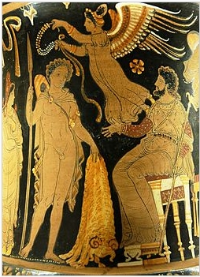
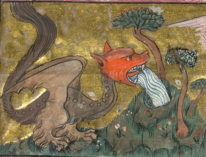
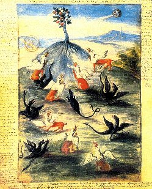
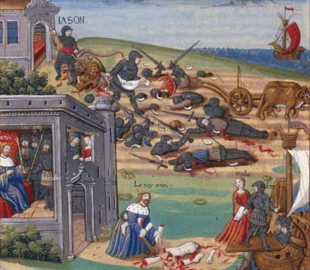
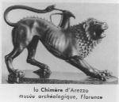
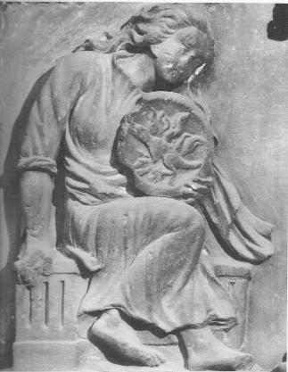
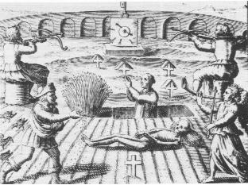

revu le 2 octobre 2014, section en cours
Préface de l'auteur
I Ayant pénétré, moi, Philalèthe, Philosophe anonyme, les arcanes de la médecine, de la chimie et de la physique, j'ai décidé de rédiger ce petit traité, l'an 1645 de la Rédemption du monde et le trente-troisième de mon âge, afin d'acquitter ce que je dois aux Fils de l'Art et pour tendre la main à ceux qui sont égarés dans le labyrinthe de l'erreur. Ainsi apparaîtra-t-il aux Adeptes que je suis leur pair et leur frère; quant à ceux qu'ont séduits les vains discours des sophistes, ils verront et recevront la lumière, grâce à laquelle ils reviendront à une voie plus sûre. Et je présage, en vérité, que nombre d'entre eux sont éclairés par mes travaux.
II Ce ne sont point des fables, mais des expériences réelles que j'ai vues, faites et connues: l'Adepte l'inférera aisément en lisant ces pages. C'est pourquoi, les écrivant pour le bien de mon prochain, il me suffit de déclarer que jamais personne n'a parlé de cet art aussi clairement que moi; certes, ma plume a hésité souvent à tot écrire, désireux que j'étais de cacher la vérité sous un masque jaloux; mais Dieu me contraignait, et je n'ai pu lui résister, lui seul connaît les coeurs, à qui seul revient la gloire dans le cycle du Temps. D'où je crois que beaucoup, en ce dernier âge du monde, auront le bonheur de posséder ce secret; car j'ai écrit sincèrement, ne laissant au novice vraiment curieux d'apprendre aucun doute sans une réponse pleinement suffisante.
III Et je sais déjà que beaucoup, comme moi, détiennent ce secret; je me persuade qu'il y en a bien d'autres encore, avec lesquels j'entrerai très prochainement, pour ainsi dire, en une intime et quotidienne communication. Que la sainte volonté de Dieu fasse ce qu'il lui plaira, je me reconnais indigne d'opérer de telles merveilles: j'adore cependant en elles la sainte volonté de Dieu, à qui toutes les créatures doivent être soumises, puisque c'est en fonction de lui seulement qu'il les créa et les maintient crées.
De la nécessité du Mercure des Sages1 pour l'Oeuvre de l'Élixir
I Quiconque désire posséder cette Toison2 d'or soit savoir que notre poudre aurifique, que nous nommons notre pierre, est l'Or, seulement élevé3 au plus haut degré de pureté et de fixité subtile où il puisse être amené, tant par la nature que par l'art d'un habile opérateur. Cet or ainsi essencifié n'est plus celui du vulgaire: nous l'appelons notre or; il est le degré suprême de perfection de la nature et de l'art. Je pourrais, à ce sujet, citer tous les philosophes, mais je j'ai pas besoin de témoins, puisque je suis moi-même un Adepte, et que j'écris avec plus de clarté qu'aucun auparavant. Me croira qui voudra, me désapprouvera4 qui pourra; que l'on me censure5 même, si on le désire: on n'aboutira qu'à une profonde ignorance. Les esprits trop subtils, je l'affirme, songent à des chimères6, mais le chercheur assidu trouvera la vérité en suivant la voie simple de la nature.
II L'or est donc l'unique, le seul et véritable principe à partir duquel on peut produire de l'or7. Cependant, notre or qui est nécessaire à notre oeuvre est de deux natures. L'une, portée à maturité, fixe, est le Laiton rouge8, dont le coeur ou le centre9 est un feu pur. C'est pourquoi son corps se défend dans le feu où il reçoit sa purification, sans rien céder à la violence de celui-ci ni en souffrir. Cet or, dans notre oeuvre, joue le rôle du mâle. On l'unit à notre or blanc10 plus cru (notre second or, moins cuit que le précédent), tenant lieu de semence féminine, avec lequel il se conjoint et où il dépose son sperme; et ils s'unissent l'un à l'autre par un lien indissoluble, d'où se fait notre Hermaphrodite, qui a la puissance des deux sexes. Ainsi l'or corporel est-il mort11 avant d'être conjoint à sa fiancée, avec laquelle le soufre coagulant qui, dans l'or, est extraverti, devient introverti. Alors la hauteur est cachée, et la profondeur manifestée. Ainsi le fixe se fait-il volatil pour un temps, afin de posséder ensuite un état plus noble par son héritage, grâce auquel il obtiendra une fixité très puissante.
III On voit ainsi que tout le secret consiste dans le Mercure12, dont le Philosophe dit: "Dans le Mercure se trouve tout ce que cherchent les Sages". Et Geber13 déclare à son tour: "Loué14 soit le Très-Haut, qui a créé notre Mercure et lui a donné une nature qui domine le Tout. Certes, en effet, s'il n'existait pas, les Alchimistes pourraient se glorifier à leur aise, mais l'oeuvre Alchimique serait vain". Il apparaît donc que ce Mercure n'est pas celui du vulgaire, mais celui des Sages, car tout Mercure vulgaire est mâle15, c'est à dire corporel, spécifié, mort, tandis que le nôtre est spirituel, féminin, vivant et vivifiant.
IV Faites donc attention à tout ce que je dirai du Mercure, parce que, selon le Philosophe, "Notre Mercure est le Sel des Sages, et quiconque travaillerait sans lui ressemblerait à l'archer16 qui voudrait sans corde lancer une flèche". On ne peut, cependant, le trouver nulle part sur la terre. Le Fils n'en est pas moins formé pour nous, non pas en le créant, mais en l'extrayant de ces choses qui le renferment, avec la coopération de la nature, de façon admirable, et grâce à un art subtil.
Notes 1. Le Mercure des Sages correspond au premier Mercure, c'est-à-dire au Sel des Sages.
2. La Toison d'or, c'est-à-dire ce qui porte l'or : elle renvoie au voyage des Argonautes :
« Abstraction faite du côté aventureux ou investigatoire de ce périple, il a été admis que son but était une opération commerciale sur les laines de la Colchide, dont la beauté donna lieu à des bénéfices par suite desquels arriva la fiction de la Toison d'Or. Sans repousser cette supposition, il est pourtant permis d'en soutenir une autre d'après laquelle l'or proprement dit, l'or métallique du pays, ne fut pas négligé. Sa connaissance devait être parvenue dans la Grèce, car les tirées hantaient la mer, comme le prouvent les aventures de leurs dieux et héros. » [Du mineur, son rôle et son influence sur les progrès de la civilisation : d'après les données actuelles de l'archéologie et de la géologie, J. Fournet, Rey et Sézanne, 1862, p. 189]
Ce sont les héros qui firent voile pour la Colchide sous la direction de Jason afin de rapporter la toison d'or du bélier consacré à Arès. Voici d'abord leur histoire :

Jason et Pelias - Cratère à figures rouges d'Apulie, v. 340 av. J.-C. Musée du Louvre.
Jasôn, ayant reçu de Pelias l'ordre de partir à la recherche de la toison d'or appartenant au bélier parlant qui avait emporté Phryxos et Hellê, fut encouragé par l'oracle à appeler à son aide la plus noble jeunesse de la Grèce; et cinquante des plus distingués répondirent à son appel. De ce nombre étaient Hêraklês, Thêseus, Telamôn et Pêleus, Kastôr et Pollux, Idas et Lynkeus, Zêtês et Kalais, les fils ailés de Boreas, Meleagros, Amphiaraos, Kêpheus, Laertês, Autolykos, Menœtios, Aktôr, Erginos, Euphêmos, Ankœos, Pœas, Periklymenos, Augeas, Eurytos, Admêtos, Akastos, Kseneus, Euryalos, Pêneleôs et Lêitos, Askalaphos et lalmenos. Argos, fils de Phryxos, dirigé par les inspirations d'Athênê, fabriqua le vaisseau, et fit entrer dans la construction de la proue une pièce de bois venant du célèbre chêne de Dôdônê, et qui était douée de la faculté de parler. Tiphys était le timonier, Idmôn (fils d'Apollon) et Mopsos les accompagnaient en qualité de prophètes, tandis qu'Orpheus vint pour les distraire de leurs fatigues et apaiser leurs querelles par les sons de sa harpe. Ils touchèrent d'abord à l'île de Lêmnos, où à ce moment il n'y avait pas d'hommes; car les femmes, rendues furieuses par la jalousie et les mauvais traitements, avaient mis à mort pères, époux et frères. Les Argonautes, après quelque difficulté, furent reçus amicalement, et même admis dans la plus grande intimité. Ils s'arrêtèrent quelques mois, et la population suivante de l'île fut le fruit de leur visite. La reine Hypsipylê donna à Jasôn deux fils. Ils avancèrent alors le long de la côte de Thrace, et remontèrent l'Hellespont jusqu'à la côte méridionale de la Propontis, habitée par les Doliones et leur roi Kyzikos. Ici ils furent accueillis avec bienveillance; mais après leur départ ils furent ramenés au même endroit par une tempête; et comme il faisait nuit quand ils abordèrent, les habitants ne les reconnurent pas. Il s'engagea une bataille dans laquelle le chef Kyzikos fut tué par Jasôn; ce qui occasionna une grande douleur aussitôt que les faits réels furent connus. Après que Kyzikos eut été enterré avec toutes les démonstrations du deuil et tout l'appareil de la solennité, les Argonautes s'avancèrent le long de la côte de Mysia. Dans cette partie du voyage, ils laissèrent Hèrakiês derrière. Car Hylas, son jeune compagnon favori, avait été enlevé par les nymphes d'une fontaine, et Hêraklês, errant ça et là à sa recherche, négligea de revenir. Il finit par se retirer plein de chagrin, exigeant des otages des habitants de la ville voisine de Kios pour s'assurer qu'ils continueraient la recherche. Ils s'arrêtèrent ensuite dans le pays des Bébrykiens (Bébryces), où eut lieu la lutte au pugilat entre le roi Amykos et l'Argonaute Pollux : alors ils s'avancèrent vers la Bithynia, résidence du poëte aveugle Phineus. Sa cécité lui avait été infligée par Poseidôn comme châtiment pour avoir fait connaître à Phryxos la route vers la Kolchis. On lui avait donné à choisir entre la mort et la cécité, et il avait préféré ce dernier état. Il fut aussi tourmenté par les harpies, monstres ailés qui descendaient des nuages partout où sa table était mise, lui arrachaient la nourriture des lèvres en l'imprégnant d'une odeur mauvaise et intolérable. Au milieu de cette détresse, il salua les Argonautes comme ses libérateurs, ses pouvoirs prophétiques l'ayant mis à même de prévoir leur arrivée. Le repas étant préparé pour lui, les harpies approchèrent comme de coutume; mais Zêtês et Kalaïs, les fils ailés de Boreas, les repoussèrent et les poursuivirent. Ils déployèrent toute leur célérité et prièrent Phineus, reconnaissant du secours que lui avaient fourni les Argonautes, les prévint des dangers de leur voyage et des précautions nécessaires pour assurer leur salut; et ses conseils les mirent à même de passer entre les redoutables écueils appelés Symplêgades. C'étaient deux rochers qui s'ouvraient et se fermaient alternativement, avec un choc rapide et violent, au point qu'il était difficile même pour un oiseau de passer au vol pendant ce court intervalle. Lorsque l'Argô arriva à l'endroit dangereux, Euphêmos lâcha une colombe, qui passa en volant et put à peine se sauver en perdant quelques plumes de sa queue. C'était, d'après la prédiction de Phineus, pour les Argonautes un signal indiquant qu'ils pouvaient tenter le passage avec confiance. En conséquence ils firent force de rames et passèrent sains et saufs les écueils en se fermant, retenus un moment écartés par les puissants bras d'Athênê, n'écrasèrent que les ornements de l'arrière de leur vaisseau. Les dieux avaient décidé qu'aussitôt qu'un vaisseau quelconque aurait franchi ces rochers, le passage serait pour toujours désormais facile et sans danger pour tous. Les rochers séparés furent fixés à leurs places respectives et ne se refermèrent jamais. Après s'être arrêtés de nouveau sur la côte des Mariandyniens, où mourut leur timonnier Tiphys, ainsi que dans la contrée des Amazones, et après avoir recueilli les fils de Phryxos, qui avaient été jetés à la côte par Poseidôn dans la tentative qu'ils firent pour retourner de Kolchis en Grèce, ils arrivèrent en sûreté au fleuve Phasis (Phase) et au lieu où résidait AEêtès. En passant par le mont Caucase, ils virent l'aigle qui rongeait le foie de Promêtheus cloué au rocher, et entendirent les gémissements de la victime ellemême. Les fils de Phryxos furent reçus avec cordialité par leur mère Chalkiopê. Demande fut faite à AEêtês qu'il voulût bien mettre les Argonautes, héros d'extraction divine et venus sur l'ordre des dieux, en possession de la toison d'or en retour on lui offrit leur aide contre l'un de ses ennemis ou contre tous. Mais le roi se mit en colère et fit un refus péremptoire, seulement il posa des conditions qui semblaient impraticables. Hêphaestos lui avait donné deux taureaux féroces et indomptables, aux pieds d'airain, qui soufflaient la flamme de leurs naseaux. On engagea Jason, pour fournir une preuve et de son illustre origine et de la sanction donnée par les dieux à son voyage, à soumettre ces animaux au joug, afin de labourer un vaste champ et d'y semer des dents de dragon. Quelque périlleuse que fût la condition, chacun des héros s'offrit pour tenter l'aventure. Idmôn particulièrement encouragea Jasôn à entreprendre l'affaire, et les déesses Hêrê et Aphroditê lui aplanirent la route. Mêdea, fille d'AEêtês et d'Eidyia, qui avait vu le jeune héros pendant son entrevue avec son père, avait conçu pour lui une passion qui la disposa à employer tous les moyens pour assurer son salut et son succès. Elle avait reçu d'Hekatê des pouvoirs magiques supérieurs, et elle prépara, pour Jasôn le puissant onguent de Promêtheus, extrait d'une herbe qui avait poussé là où tombaient les gouttes du sang de cette victime. Le corps de Jasôn ayant été imprégné ainsi à l'avance de cette drogue devint invulnérable, soit au feu, soit aux armes de guerre. Il se chargea de l'entreprise, soumit les taureaux au joug sans recevoir aucun mal et laboura le champ : quand il eut semé les dents du dragon, des hommes armés sortirent des sillons. Mais Mêdea lui avait conseillé d'avance de lancer un gros rocher au milieu d'eux; alors ils se mirent à se battre entre eux, de sorte qu'il fut facile de les vaincre tous. La tâche prescrite avait été ainsi accomplie d'une manière triomphante. Cependant AEêtês non-seulement refusa de livrer la toison d'or, mais même il prit des mesures pour détruire en secret les Argonautes et brûler leur navire. Il résolut de les massacrer pendant la nuit après un banquet de fête; mais Aphroditê, qui veillait au salut de Jasôn, inspira au roi de Kolchis à l'instant critique un désir irrésistible de se rendre à son lit nuptial. Pendant son sommeil, le sage Idmôn conseilla aux Argonautes d'opérer leur fuite, et Mêdea consentit à les accompagner. Elle endormit par une potion magique le dragon qui gardait la toison d'or, plaça ce prix tant désiré à bord du vaisseau et accompagna dans leur fuite Jasôn et ses compagnons, emmenant avec elle le jeune Apsyrtos, son frère. AEêtês, profondément exaspéré de la fuite des Argonautes avec sa fille, assembla sur-le-champ ses forces et mit à la mer pour les poursuivre. Ses efforts furent si énergiques qu'il rejoignit bientôt le vaisseau fugitif, lorsque les Argonautes durent une seconde fois leur salut au stratagème de Mêdea. Elle tua son frère Apsyrtos, coupa son corps en morceaux et dispersa ses membres tout à l'entour dans la mer. AEètês, arrivant à cet endroit, trouva ces lamentables traces du meurtre de son fils; mais pendant qu'il s'arrêtait à recueillir ces membres épars et à donner au corps une sépulture honorable, les Argonautes s'échappèrent. L'endroit où le malheureux Apsyrtos fut mis en morceaux reçut le nom de Tomes. Ce fratricide de Mêdea, cependant, excita à un si haut degré l'indignation de Zeus, qu'il condamna l'Argô et son équipage à un voyage pénible, plein de difficultés et de privations, avant d'être autorisé à atteindre la patrie. Les héros dans leur retour traversèrent une longueur incommensurable et de mer et de fleuves d'abord par le fleuve Phasis ils remontèrent jusqu'à l'océan qui coule autour de la terre. Puis, suivant la direction de ce courant jusqu'à sa jonction avec le Nil, ils descendirent le Nil jusqu'en Egypte, d'où ils transportèrent l'Argô sur leurs épaules dans un pénible voyage par terre jusqu'au lac Tritônis en Libya. Là, réduits à l'extrémité par le besoin et l'épuisement, ils furent sauvés grâce à la bonté du dieu local Tritôn, qui les traita d'une façon hospitalière, et présenta même à Euphêmos une motte de terre, comme promesse symbolique annonçant que ses descendants fonderaient un jour une ville sur le rivage libyen. La promesse fut amplement réalisée par la florissante et puissante ville de Kyrênê (Cyrène), dont les princes les Battiades se vantaient d'être les descendants directs d'Euphêmos. Refaits par l'hospitalité de Triton, les Argonautes se retrouvèrent sur les eaux de la Méditerranée en route pour leur patrie. Mais, avant d'arriver à Iôlkos, ils visitèrent Circê, dans l'Ile d'AEaea, où Mêdea fut purifiée pour le meurtre d'Apsyrtos ; ils s'arrêtèrent aussi à Korkyra (Corcyre), appelée alors Drepanê, où. Alkinoos les reçut et les protégea,. On montrait encore du temps de l'historien Timée la grotte dans l'île où avait été consommé le mariage de Mêdea et de Jasôn, ainsi que les autels qu'elle avait élevés à Apollon, et les rites et les sacrifices qu'elle avait institués la première. Après avoir quitté Korkyra, l'Argô fut assailli par une dangereuse tempête près de l'île de Thèra. Les héros furent sauvés d'un péril imminent par l'aide surnaturelle d'Apollon; le dieu lançant de son arc d'or une flèche qui perça les nuages comme un trait de lumière, fit surgir soudainement sur leur route une île nouvelle, et ce fut pour eux un port de refuge. L'île fut appelée Anaphê et les Argonautes reconnaissants y établirent, en l'honneur d'Apollon AEglêtês, un autel et des sacrifices qui y furent toujours continués dans la suite et rapportés par les habitants à cette aventure à laquelle était due leur origine. En approchant de la côte de Krête, les Argonautes ne purent aborder, en étant empêchés par Talôs, homme d'airain, fabriqué par Hephaestos, qui en fit présent à Minôs pour la défense de l'île. Cette vigilante sentinelle lança contre le vaisseau qui approchait des quartiers de roc, et menaça les héros de destruction. Mais Mêdea le trompa par un stratagème et le tua en découvrant et en frappant le seul point vulnérable de son corps. Les Argonautes purent alors aborder et se refaire. Ils s'avancèrent ensuite vers AEgina, où cependant ils éprouvèrent encore de la résistance avant de pouvoir obtenir de l'eau; puis le long de la côte de l'Eubœa et de la Lokris jusqu'à Iôlkos dans le golfe de Pagasae, lieu d'où ils étaient partis. La conduite de Pêlias pendant leur absence et la vengeance signalée que tira de lui Mêdea après leur retour, ont déjà été racontées dans un précédent chapitre. Le vaisseau Argô lui-même, dans lequel l'élite des héros grecs avait accompli un si long voyage et bravé tant de dangers, fut consacré par Jasôn à Poseidôn à l'isthme de Corinthe. D'après un autre récit, il fut transporté parmi les étoiles par Athênê, et devint une constellation.Nous donnons à présent l'interprétation de Pernety, extrait de ses Fables Grecques et Egyptiennes [on reviendra ultérieurement sur cette interprétation, en particulier dans l'examen de l'Atalanta fugiens].
[extrait de Histoire de la Grèce depuis les temps les plus reculés jusqu'à la fin de la génération contemporaine d'Alexandre le Grand. Tome 1 / G. Grote, A. Lacroix, Verboeckhoven et Cie (Bruxelles), cap. xiii, pp. 262-271]
Le Navire Argo dans l'Uranographia de Johannes Hevelius
Je parlerai donc en premier lieu de l’expédition de la Toison d’or : des pommes d’or : du jardin des Hespérides, & quelques autres qui manifestent plus clairement que l’intention des Auteurs de ces fictions était d’y enveloppée les mystères de l’Art Hermétique.
Orphée est le premier qui ait fait mention de l’expédition de la Toison d’or, si l’on veut admettre les ouvrages d’Orphée comme appartenant à ce premier des Poètes Grecs ; mais je n’entre pas dans cette discussion des savants : que ces ouvrages soient vrais ou supposés, peu m’importe ; il me suffit qu’ils soient partis d’une plume très ancienne, savante, & au fait des mystères des Egyptiens & des Grecs. S. Justin en son Parenet ; Lactance, & S. Clément d’Alexandrie, dans son Discours aux Gentils, parlent d’Orphée sur ce ton-là.
Ce Poète a donné à cette fiction un air d’histoire qui l’a fait regarder comme telle par nos Mythologues modernes mêmes, malgré l’impossibilité où ils se trouvent d’en ajuster les circonstances. Ils ont mieux aimé y échouer, que d’y voir le sens caché & mystérieux qu’elle présente, & que l’Auteur même a manifesté assez visiblement en citant, dans le cours de cette fiction, quelques autres de ses ouvrages ; savoir, un Traité des petites pierres, & un autre de l’antre de Mercure comme source de tous les biens. Il est aisé de voir de quel Mercure il entend parler, puisqu’il le présente comme faisant partie de l’objet que se proposait Jason dans la conquête de la Toison d’or.
CHAPITRE PREMIER.
Histoire de la conquête de la Toison d’or.
Il y a peu d’Auteurs anciens qui ne parlent de cette fameuse conquête. Elle a exercé l’esprit de nos savants, qui ont fait beaucoup de dissertations sur ce sujet, & M. l’Abbé Banier, qui en a inséré plusieurs dans les Mémoires de l’Académie des Belles Lettres, regarde ce fait comme si constant, qu’on ne peut, dit-il (Mytolog T. III. P.198.), le détacher de l’histoire ancienne de la Grèce, sans renverser presque toutes les généalogies de ce temps-là. Nous avons un Poème là-dessus sous le nom d Orphée ; mais Vossius prétend que ce Poète n’en est pas l’Auteur, & que ce Poème n’est pas plus ancien que Pisistrate (Vossius de Poëti Græcis & Latinis, cap.9.). On l’attribue à Onomacrite, & l’on dit qu’il fut composé vers la 50e. Olympiade. Il pourrait bien se faire que cet Onomacrite n’en fût pas l’Auteur, mais seulement le restaurateur, ou qu’il en eut recueilli tous les fragments dispersés, comme Aristarque ceux d Homère. Apollonius de Rhodes en composa un sur la même matière vers le temps des premiers Ptolomées. Pindare en fait un allez long détail dans la quatrième Olympique, & dans la troisième Isthmique ; beaucoup d’autres Poètes font de fréquentes allusions à cette conquête. Mais ce qui prouve l’antiquité de cette fable, c’est qu’Homère en dit deux mots dans le douzième Livre de l’Odyssée. M. l’Abbé Banier trouve une erreur dans cet endroit de ce dernier Poète, & dit qu’il fait parler Circé de certaines roches errantes comme situées sur le détroit qui sépare la Sicile de l’Italie, & qu’elles sont en effet à l’entrée du Pont-Euxin. Pour ajuster cette expédition aux idées de M. l’Abbé Banier, ces roches ne sauraient à la vérité se trouver au lieu marqué dans Homère ; mais j’aurais cru qu’il était plus à propos de chercher les moyens d’accorder M. l’abbé Banier avec Homère, que d’accuser ce Poète d’erreur, pour éluder les difficultés que cet endroit faisait naître. Il est aisé de se tirer d’embarras quand on a recours à de semblables ressources. Homère avait sans doute ses raisons pour placer là ces roches errantes ; car la plupart des erreurs que l’on trouve dans ce Poète, & dans les autres inventeurs des fables, semblent y être mises avec affectation, comme pour indiquer à la postérité que ce sont des fictions pures qu’ils débitent, & non de véritables histoires. Les lieux que l’on fait parcourir aux Argonautes, les endroits où on les fait aborder sont si éloignés de la route qu’ils auraient dû & pu tenir ; il y a même une impossibilité si manifeste qu’ils aient tenu celle dont Orphée parle, qu’on voit clairement que l’intention de ce Poète n’était que de raconter une fable.
Les difficultés qui se présentent en foule à un Mythologue qui veut trouver une véritable histoire dans cette fiction, n’ont pas rebuté la plupart des savants. Eustathe (Sur le vers 686 de Denys Periegete.) parmi les Anciens, l’a regardé comme une expédition militaire, laquelle, outre l’objet de la Toison d’or, c’est-à-dire, selon lui, le recouvrement des biens que Phryxus avait emportés dans la Colchide, avait encore d’autres motifs, comme celui de trafiquer sur les côtes du Pont-Euxin, & d’y établit quelques colonies pour en assurer le commerce. Ceux qui ont voulu ramener la plupart des Fables anciennes à l’Histoire Sainte, comme le P. Thomasin & M. Huet, se sont imaginés y voir l’histoire d’Abraham, d’Agar & de Sara, de Moïse & de Josué. En suivant de pareilles idées, il n’est point de fables, si palpablement fables qu’elles soient, qu’on ne puisse y faire venir.
Eustathe, pour accréditer son sentiment, dit qu’il y avait un nombre de vaisseaux réunis en une flotte, dont le Navire Argo en était comme l’Amiral ; mais que les Poètes n’ont parlé que d’un seul vaisseau, & n’ont nommé que les seuls chefs de cette expédition. Je ne pense pas qu’on en croit cet Auteur sur sa parole, puisqu’il n’en a d’autre garant que la raison de convenance, qui exigeait que les choses fussent ainsi pour que son sentiment pût se soutenir. M. l’Abbé Banier, qui suit assez bien Eustathe dans ce genre de preuves, décide hardiment que cette expédition n’est point le mystère du grand oeuvre. A-t-il prononcé avec connaissance de cause ? avait-il lu les Philosophes ? avait-il même du grand oeuvre l’idée qu’il faut en avoir ? Je répondrais bien qu’il n’en connaissait que le nom, mais nullement les principes.
Pour donner une idée juste de cette fiction, il faudrait prendre la chose dès son origine, expliquer comment cette prétendue Toison d’or fut portée dans la Colchide, & faire toute l’histoire d’Athamas, d’Ino, de Nephelé, d’Hellé & de Phryxus, de Léarque & de Mélicerte ; mais comme nous aurons occasion d’en parler dans le quatrième Livre, en expliquant les Jeux Isthmiques, nous entrerons seulement dans le détail de cette expédition, en suivant ce qu’Orphée & Apollonius en ont rapporté.
Jason eut pour père Eson, Créthéus pour aïeul, Eole pour bisaïeul, & Jupiter pour trisaïeul. Sa mère fut Polimede, fille d’Autolycus, d’autres disent Alcimede, ce qui convient également pour le fond de l’histoire, suivant mon système. Tyro, fille de Salmonée, élevée par Créthéus, frère de celui-ci, plut à Neptune, & en eut Nélée & Pélias ; elle ne laissa pas ensuite d’épouser Créthéus son oncle, dont elle eut trois fils, Eson, Pherès & Amithaon. Créthéus bâtit la ville d’Iolcos, donc il fit la capitale de ses Etats, & laissa en mourant la couronne à Eson. Pélias, à qui Créthéus n’avait point donné d’établissement, comme ne lui appartenant pas, se rendit puissant par ses intrigues, & détrôna Eson. Jason qui vint au monde sur ces entrefaites, donna de la jalousie & de l’inquiétude à Pélias, qui chercha en conséquence tous les moyens de le faire périr. Mais Eson, avec son épouse, ayant pénétré les mauvais desseins de l’usurpateur, portèrent le Jeune Jason, qui s’appelait alors Diomede, dans l’antre de Chiron, fils de Saturne & de la Nymphe Philyre, qui habitait sur le Mont Pélion, & lui confièrent son éducation. Le Centaure passait pour l’homme le plus sage & le plus habile de son temps. Jason y apprit la Médecine & les Arts utiles à la vie.
Ce jeune Prince, devenu grand, s’introduisit dans la Cour d’Iolcos, après avoir exécuté de point en point tout ce que l’Oracle lui avait prescrit. Pélias ne douta pas que Jason ne s’acquît bientôt la faveur du Peuple & des Grands. Il en devint jaloux, & ne cherchant qu’un honnête prétexte pour s’en défaire, il lui proposa la conquête de la Toison d’or, persuadé que Jason ne refuserait pas une occasion si favorable d’acquérir de la gloire. Pélias, qui en connaissait tous les risques, pensait qu’il y périrait. Jason prévoyait lui-même tous les dangers qu’il avait à courir. La proposition fut néanmoins de son goût, & son grand courage ne lui permit pas de ne point l’accepter.
Il disposa donc tout pour cet effet, & suivant les conseils de Pallas, il fit construire un vaisseau, auquel il mit un mât fait d’un chêne parlant de la forêt de Dodone. Ce vaisseau fut nommé le Navire Argo ; & les Auteurs ne sont pas d’accord sur le motif qui le fit nommer ainsi.. Apollonius, Diodore de Sicile, Servius & quelques autres prétendent que ce nom lui fut donné, parce qu’Argus en proposa le dessein ; & l’on varie encore beaucoup sur cet Argus, les uns le prenant pour le même que Junon employa à la garde d’Io, fils d’Arestor ; mais Meziriac (Sur l’Ep. Hypsiphile à Jason.) veut qu’on lise dans Apollonius de Rhodes, fils d’Alector, au lieu de fils d’Arestor. Sans entrer dans le détail des différents sentiments au sujet de la dénomination de ce vaisseau, que l’on peut voir dans plusieurs Auteurs, je dirai seulement qu’il fut construit du bois du Mont Pélion, suivant l’opinion la plus commune des Anciens.
Prolémée Ephestion dit, au rapport de Photius, qu’Hercule lui-même en fut le constructeur. La raison que M. l’Abbé Banier apporte pour rejeter cette opinion, n’est point du tout concluante à cet égard. Quant à la forme de ce vaisseau, les Auteurs ne sont pas plus d’accord entre eux. Les uns disent qu’il était long, les autres rond ; ceux-là, qu’il avait vingt-cinq rames de chaque côté ; ceux-ci qu’il en avait trente ; mais on convient en général qu’il n’était pas fait comme les vaisseaux ordinaires. Orphée & les plus anciens Auteurs qui en ont parlé, n’ayant rien dit de cette forme, tout ce que les autres en rapportent n’est fondé que sur des conjectures.
Toutes les circonstances de cette expédition prétendue souffrent contradiction. On varie & sur le Chef & fur le nombre de ceux qui l’accompagnèrent. Quelques-uns assurent qu’Hercule fut d’abord choisi pour Chef, & que Jason ne le devint qu’après qu’Hercule eut été abandonné dans la Troade, où il était descendu à terre pour aller chercher Hylas. D’autres prétendent qu’il n’eut aucune part à cette entreprise ; mais le sentiment ordinaire est qu’il s’embarqua avec les Argonautes. Quant au nombre de ceux-ci, on ne peut rien établir de certain, puisque des Auteurs en nomment dont les autres ne font aucune mention. On en compte communément cinquante, tous d’origine divine. Les uns fils de Neptune, les autres de Mercure, de Mars, de Bacchus, de Jupiter. On peut en voir les noms & l’histoire abrégée dans le Tome troisième de la Mythologie de M. l’Abbé Banier, page 211 & Suiv. où il explique le tout conformément à ses idées, & décide à son ordinaire qu’il faut rejeter ce qu’il ne peut y ajuster. Il admet, par exemple, dans le nombre de ces Argonautes, Acaste, fils de Pélias, & Nélée, frère de celui-ci. Y a-t-il apparence, si cette expédition était un fait véritable, qu’on eût supposé que Pélias, persécuteur & ennemi juré de Jason ; ce Pélias même qui n’engageait ce neveu dans cette expédition périlleuse, que parce qu’il regardait sa perte comme assurée, eût permis à Acaste de l’y accompagner, lui qui ne cherchait à faire périr Jason que pour conserver la couronne à ce fils ? On ne manquerait pas de raison pour en rejeter d’autres que ce savant Mythologue admet sur la foi d’autres Auteurs ; & il serait aisé de prouver qu’ils ne pouvaient s’y être trouvés, suivant le système de ce savant ; mais il faudrait une discussion qui n’entre pas dans mon plan.
Lorsque tout fut prêt pour le voyage, la troupe de Héros s’embarqua, & le vent étant favorable on mit à la voile, on aborda en premier lieu à Lemnos, afin de se rendre Vulcain favorable. Les femmes de cette Isle ayant, dit-on, manqué de respect à Vénus, cette Déesse, pour les en punir, leur avait attaché une odeur insupportable, qui les rendit méprisables aux hommes de cette Isle. Les Lemniennes piquées complotèrent entre elles de les assassiner tous pendant leur sommeil. La seule Hypsiphile conserva la vie à son père Thoas, qui pour lors était Roi de l’Isle, Jason s’acquit les bonnes grâces d’Hypsiphile, & en eut des enfants.Au sortir de Lemnos, les Tyrrémens leur livrèrent un sanglant combat, où tous ces Héros furent blessés, excepté Glaucus qui disparut, & fut mis au nombre des Dieux de la mer (Pausis dans Athen. 1. 7. c. 12.), Delà ils tournèrent vers l’Asie, abordèrent à Marsias, à Cius, à Cyzique, en Ibélie : ils s’arrêtèrent ensuite dans la Béblycie, qui était l’ancien nom de la Bithynie, s’il faut en croire Servius (Sur le 5e. liv. de l’Enéide, v. 373.), Amycus qui y régnait, avait coutume de défier au combat du ceste ceux qui arrivaient dans ses Etats. Pollux accepta le défi, & le fit périr sous ses coups. Nos voyageurs arrivèrent après cela vers les Syrtes de la Lybie, par où l’on va en Egypte. Le danger qu’il y avait à traverser ces Syrtes, fit prendre à Jason & à ses compagnons le parti de porter leur vaisseau sur leurs épaules pendant douze jours, à travers les déserts de la Lybie ; au bout duquel temps ayant retrouvé la mer, ils le remirent à flots. Ils furent aussi rendre visite à Phinée, Prince aveugle, & sans cesse tourmenté par les Harpies, dont il fut délivré par Calais & Zethès, enfants de Borée, qui avaient des ailes. Phinée, devin & plus clairvoyant des yeux de l’esprit que de ceux du corps, leur indiqua la route qu’ils devaient tenir. Il faut, leur dit-il, aborder premièrement aux Isles Cyanées, (que quelques-uns ont appelées Symplegades, ou écueils qui s’entre heurtent ). Ces Isles jettent beaucoup de feu ; mais vous éviterez le danger en y envoyant une colombe. Vous passerez de-là en Bithynie, & laisserez à côté l’Isle Thyniade. Vous verrez Mariandynos, Achéruse, la Ville des Enetes, Carambim, Halym, Iris, Thémiscyre, la Cappadoce, les Calybes, & vous arriverez enfin au fleuve Phasis, qui arrose la terre de Circée, & de-là en Colchide où est la Toison d’or. Avant d’y arriver les Argonautes perdirent leur Pilote Tiphis, & mirent Ancée à sa place.
Toute la troupe débarqua enfin sur les terres d’ Ætes, fils du Soleil & Roi de Colchos, qui leur fit un accueil très gracieux. Mais comme il était extrêmement jaloux du trésor qu’il possédait, lorsque Jason parut devant lui, & qu’il eut été informé du motif qui l’amenait, il parut consentir de bonne grâce à lui accorder sa demande ; mais il lui fit le détail des obstacles qui s’opposaient à ses désirs. Les conditions qu’il lui prescrivit étaient si dures, qu’elles auraient été capables de faire désister Jason de son dessein. Mais Junon qui chérissait Jason, convint avec Minerve qu’il fallait rendre Médée amoureuse de ce jeune Prince, afin qu’au moyen de l’art des enchantements dont cette Princesse était parfaitement instruite, elle le tirerait des périls où il s’exposerait pour réussir dans son entreprise. Médée prit en effet un tendre intérêt à Jason ; elle lui releva le courage, & lui promit tous les secours qui dépendaient d’elle, pourvu qu’il s’engageât à lui donner sa foi.
La Toison d’or était suspendue dans la forée de Mars, enceinte d’un bon mur, & l’on ne pouvait y entrer que par une seule porte gardée par un horrible Dragon, fils de Typhon & d’Echidna. Jason devait mettre sous le joug deux Taureaux, présent de Vulcain, qui avaient les pieds & les cornes d’airain, & qui jetaient des tourbillons de feu & de flammes par la bouche & les narines ; les atteler à une charrue, leur faire labourer le champ de Mars, & y semer les dents du Dragon, qu’il fallait avoir tué auparavant. Des dents de ce Dragon semées devaient naître des hommes armés, qu’il fallait exterminer jusqu’au dernier, & que la Toison d’or serait ainsi la récompense de sa victoire.
Jason apprit de son amante quatre moyens pour réussir. Elle lui donna un onguent dont il s’oignit tout le corps, pour se préserver contre le venin du Dragon, & le feu des Taureaux. Le second fut une composition somnifère qui assoupirait le Dragon sitôt que Jason la lui aurait jetée dans la gueule. Le troisième une eau limpide pour éteindre le feu des Taureaux ; le quatrième enfin une médaille, sur laquelle le Soleil & la Lune étaient représentés.
Dès le lendemain Jason muni de tout cela se présente devant le Dragon, lui jette la composition enchantée ; il s’assoupit, s’endort, devient enflé & crève. Jason lui coupe la tête, & lui arrache les dents. A peine a-t-il fini que les Taureaux viennent à lui, en faisant jaillir une pluie de feu. Il s’en garantit en leur jetant son eau limpide. Ils s’apprivoisent à l’instant ; Jason les saisit, les met sous le joug, labour le champ & y sème les dents du Dragon.
Ovide, métamorphoses, mss Richelieu 137
Tout aussitôt en voit sortir des combattants ; mais suivant, toujours les bons conseils de Médée, il s’en éloigne un peu, leur jette une pierre qui les met en fureur ; ils tournent leurs armes les uns contre les autres, & s’entre-tuent tous. Jason délivré de tous ces périls, court se saisir de la Toison d’or, revient victorieux à son vaisseau, & part avec Médée, pour retourner dans sa patrie.
Telle est en abrégé la narration d’Orphée, ou, si l’on veut, d’Onomacrite. M. l’Abbé Banier dit que l’Argonaute Orphée avait écrit une relation de ce voyage en langue Phénicienne. Je ne vois pas sur quoi ce Mythologue fonde cette supposition. Orphée n’était pas Phénicien ; il accompagnait des Grecs, & il écrivait pour des Grecs. Brochart lui aura sans doute fourni cette idée, parce qu’il prétendait trouver l’explication de ces fictions dans l’étymologie des noms Phéniciens. Mais ce système ne peut avoir lieu à l’égard de l’expédition des Argonautes, dont tous les noms font Grecs & non Phéniciens. Si Onomacrite a fait son Poème Grec sur le Poème Phénicien d’Orphée, & qu’il n’entendît pas cette dernière langue, comme le prétend M. l’Abbé Banier, Onomacrite aura-t-il pu suivre Orphée ? Si l’on me présentait un Poème Chinois que Je n’entendisse pas, pourrais-je le traduire ou l’imiter ?
La relation d’Apollonius de Rhodes, & celle de Valerius Flaccus ne différent guère de celle d’Orphée ; mais plusieurs Anciens y ont ajouté des circonstances qu’il est inutile de rapporter. Ceux qui ont lu ces Auteurs y ont vu que Médée, en se sauvant avec Jason, massacra son frère Absyrthe, le coupa en morceaux, & répandit ses membres sur la route, pour retarder les pas de son père, & de ceux qui la poursuivaient ; qu’étant arrivée dans le pays de Jason, elle rajeunit Eson, père de son amant, & fit beaucoup d’autres prodiges. Ils y auront lu que Phryxus traversa l’Hellespont sur un Bélier, arriva à Colchos, y sacrifia ce Bélier à Mercure, & en suspendit la Toison, dorée par ce Dieu, dans la forêt de Mars ; qu’enfin de tous ceux qui entreprirent de s’en emparer, Jason fut le seul à qui Médée prêta son secours, sans lequel on ne pouvait réussir.
*****************
Avant d’entrer dans le détail des explications Hermétiques de cette fiction, voyons en peu de mots ce qu’en ont pensé quelques savants accrédités. Le plus grand nombre l’a regardée comme la relation d’une expédition réelle, qui contribuait beaucoup à éclaircir l’histoire d’un siècle, dont l’étude est accompagnée de difficultés sans nombre. M. le Clerc (Bibliot. Unîv. c.21.) l’a prise pour le récit d’un simple voyage de Marchands Grecs, qui entreprirent de trafiquer sur les côtes Orientales du Pont-Euxin. D’autres prétendent que Jason fut à Colchos pour revendiquer les richesses réelles que Phryxus y avait emportées, d’autres enfin que c’est une allégorie. Plusieurs ont imaginé que cette prétendue Toison d’or devait s’entendre de l’or des mines emporté par les torrents du pays de Colchos, que l’on ramassait avec des toisons de Bélier ; ce qui se pratique encore aujourd’hui en différents endroits. Strabon est de ce dernier sentiment. Mais Pline pense avec Varron que les belles laines de ce pays-là ont donné lieu à ce voyage, & aux fables que l’on en a faites. Palephate, qui voulait expliquer tout à sa fantaisie, a imaginé que sous l’emblème de la Toison d’or, on avait voulu parler d’une belle statue de ce métal, que la mère de Pélops avait fait faire, & que Phryxus avait emportée avec lui dans la Colchide. Suidas croit que la Toison d’or était un livre de parchemin qui contenait l’Art Hermétique, ou le secret de faire de l’or. Tollius a voulu, dit M. l’Abbé Banier, faire revivre cette opinion, & a été suivi par tous les Alchimistes. Il est vrai que Jacques Tollius dans son Traité Fortuita, a adopté ce sentiment ; mais M. l’Abbé Banier, en disant que tous les Alchimistes pensent comme lui, donne une preuve bien convaincante qu’il n’a pas lu les ouvrages des Philosophes Hermétiques, qui regardent la fable de la Toison d’or, non pas comme Suidas & Tollius, mais comme une allégorie du grand oeuvre, & de ce qui se passe dans le cours des opérations de cet Art. On en sera convaincu si l’on veut prendre là peine de lire les ouvrages de Nicolas Flamel, d’Augurelle, de d’Espagnet, de Philalèthe, &c. Quelques Auteurs ont tenté de donner à cette fable un sens purement moral ; mais ils ont échoué : d’autres enfin forcés par l’évidence ont avoué que c’était une allégorie faite pour expliquer les secrets de la Nature, & les opérations de l’Art Hermétique, Noël le Comte est de ce sentiment (Mythol. 1 6. c. 8.), quant à cette fiction, sans cependant l’admettre pour les autres. Eustathius parmi les Anciens l’explique de la même sorte dans des notes sur Denis le Géographe.
Examinons légèrement ces différentes opinions, le Lecteur pourra, juger ensuite quelle est la mieux fondée. Quelque différentes & extravagantes que soient, au moins en apparence, les relations des Auteurs, tant de l’allée que du retour des Argonautes, on prétend tirer de l’existence réelle de ces lieux qu’on leur fait parcourir une preuve de la réalité de cette expédition. De graves Historiens les ont en conséquence adoptées en tout ou en partie, tels qu’Hétacée de Milet, Timagete, Timée, &c. Sirabon même, qui n’y ajoute pas foi, fait mention des monuments trouvés dans les lieux cités par les Poètes. Mais ne sait-on pas qu’une fiction, un roman, n’ont de grâce qu’autant que ce qu’ils mènent sur la scène approche du vrai ? Le vraisemblable les fait prendre pour des histoires ; sans cette qualité, on n’y verrait qu’une fable pure, aussi puérile & aussi insipide que les Contes des Fées. L’existence réelle des lieux de ces pays-là ne saurait d’ailleurs former une preuve, pas même une présomption pour établir la réalité de cette histoire, puisque Diodore de Sicile (Liv. a. ch. 6.) assure positivement que la plupart des lieux de la Grèce ont tiré leurs noms de la doctrine de Musée, d’Orphée, &c. Or la doctrine de ces Poètes était celle qu’ils apprirent des Prêtres d’Egypte, & l’on a vu ci-devant que celles des Prêtres d’Egypte était la Philosophie d’Hermès, ou l’Art Sacerdotal, appelé depuis l’Art Hermétique.
Mais ce qui prouve clairement que l’histoire des Argonautes n’est pas véritable, c’est que le temps, les personnes & leurs actions, jointes aux circonstances qu’on en rapporte, ne sont point du tout conformes à la vérité. Si l’on fait attention au temps, il sera aisé de voir combien se sont trompés ceux qui ont voulu en déterminer l’époque. Les savants ont trouvé un si grand embarras à ce sujet, qu’ils n’ont pu s’accorder entre eux. Presque tous ont pris pour point fixe l’événement de la guerre de Troye, parce qu’Homère dans son Iliade nomme quelques-uns de ces guerriers, ou leurs fils, ou leurs petits-fils comme ayant assistés à cette seconde expédition. Mais pour avoir un pôle fixe, avec lequel on pût faire comparaison, il eût fallu que l’époque même de la guerre de Troye fût déterminée ; ce qui n’est pas, comme nous le démontrerons dans le sixième livre. Ces deux époques étant donc aussi incertaines l’une que l’autre, elles ne peuvent se servir de preuves réciproques ; & tous les raisonnements que nos savants font en conséquence, tombent d’eux-mêmes. Toute l’érudition que l’on étale à ce sujet, n’est que de la poudre que l’on nous jette devant les yeux. Que Castor & Pollux, Philoctete, Euryalus, Nestor, Ascalaphus, Jalmenus & quelques autres soient supposés s’être trouvés aux deux expéditions, on prouverait tout au plus par-là qu’elles ne furent pas beaucoup éloignées l’une de l’autre ; mais cela n’en déterminerait pas l’époque précise. Les uns, avec Eusebe, mettent entre ces deux événements une distance de 96 ans, les autres, avec Scaliger, en comptent seulement 20 ; &M. l’abbé Banier, pour partager le différend, ne met qu’environ 35 ans.
Apollodore fait mourir Hercule 55 ans avant la guerre de Troye (Clem. d’Alex. Strom. 1.I.). Hérodote ne compte qu’environ 400 ans depuis Homère jusqu’à lui, & près de 500 depuis Hercule jusqu’à Homère, quoiqu’il ne mette qu’environ 160 ans d’intervalle entre ce dernier & le siège de Troye. Hercule, suivant Hérodote, serait mort plus de 500 ans avant ce siège ; il faut donc en conclure qu’Hercule ayant été du nombre des Argonautes, cette expédition doit avoir précédé de 300 ans la prise de Troye. Mais, suivant ce calcul, comment quelques-uns des Argonautes, ou leurs fils auraient-ils pu se trouver à cette dernière expédition ? Hélène, qu’on dit en avoir été le sujet, eût été alors une beauté bien surannée, & peu capable d’être la récompense du jugement de Paris. Cette difficulté a paru si difficile à lever, que quelques Anciens, pour se tirer d’embarras, ont imaginé qu’Hélène, comme fille de Jupiter, était immortelle. Tous les Argonautes étant fils de quelque Dieu, ou descendus d’eux, ne pouvaient-ils pas avoir eu le même privilège ? Hérodote parle à la vérité de ce siège de Troye ; mais les difficultés & les objections qu’il se fait à lui-même sur sa réalité, & les réponses qu’il y donne, prouvent assez qu’il ne le croyait pas véritable. Nous discuterons tout cela dans le sixième Livre.
Une autre difficulté non moins difficile a résoudre, se présente dans Thésée & sa mère Æthra. Thésée avait enlevé Ariadnee, & l’abandonna dans l’Isle de Naxo, où Bacchus l’ayant épousée, en eut Thoas, qui devint Roi de Lemnos & père d’Hypsiphile, qui reçue Jason dans cette Isle ; Thésée eut donc pu alors avoir été l’aïeul d’Hypsiphile, Æthhra sa bisaïeule. Comment celle-ci aura-t-elle pu se trouver esclave d’Hélène dans le temps de la prise de Troye ? Il n’est pas possible d’accorder tous ces faits, en n’admettant même avec M. l’Abbé Banier que 35 ans de distance entre ces deux événements.
Thésée avait au moins 30 ans, lorsqu’il entreprit le voyage de l’Isle de Crète, pour délivrer sa patrie du tribut qu’elle payait à Minos ; puisqu’il avait déjà fait presque toutes les grandes actions qu’on lui attribut ; & qu’il avait été reconnu Roi d’Athènes. Æthra devait par conséquent en avoir au moins 45. Depuis ce voyage de Thésée jusqu’à celui des Argonautes, il doit s’être écoulé environ 40 ans ; puisque Thoas naquit d’Ariadne, devint grand, régna même dans l’isle de Lemnos, & eut entre autres enfants Hypsiphile, qui regnait dans cette Isle, lorsque Jason y aborda. Les Auteurs disent même que Jason racontait à Hypsiphile l’histoire de Thésée, comme une histoire du vieux temps.
Nouvelle difficulté. Toute l’Antiquité convient que Thésée, âgé au moins de cinquante ans, & déjà célèbre par mille belles actions, ayant appris des nouvelles de la beauté d’Hélène, résolut de l’enlever. Il fallait bien qu’elle fût nubile, puisque d’anciens Auteurs assurent que Thésée, après l’avait enlevée, la laissa grosse entre les mains de sa mère Æthra ; d’où elle fut ensuite retirée par ses frères Castor & Pollux. Ce fait doit avoir nécessairement précédé la conquête de la Toison d’or, à laquelle ces deux frères assistèrent. Que nos Mythologues lèvent toutes ces difficultés, & tant d’autres qu’il serait aisé de leur faire. Et quand même ils en viendraient à bout d’une manière à satisfaire les esprits les plus difficiles, pourraient-ils se flatter d’avoir déterminé l’époque précité du voyage des Argonautes ? Loin que M. l’Abbé Banier dans ses Mémoires présentés à l’Académie des Belles Lettres, & dans sa Mythologie, ait touché le but à cet égard, il semble n’avoir écrit que pour rendre cet événement plus douteux.
Venons à la chose même. Peut-on regarder comme une histoire véritable, un événement qui ne semble avoir été imaginé que pour amuser des enfants ? Persuadera-t-on à des gens sensés que l’on ait construit un vaisseau de chênes parlants ; que des Taureaux jettent des tourbillons de feu par la bouche & les narines ; que des dents d’un Dragon semées dans un champ labouré, il en naisse aussitôt des hommes armés qui s’entre-tuent pour une pierre jetée au milieu d’eux ; enfin tant d’autres puérilités qui sont sans exception toutes les circonstances de cette célèbre expédition ? y en a-t-il une seule en effet qui ne soit marquée au coin de la Fable, & d’une Fable même assez mal concertée, & très insipide, si l’on ne l’envisage pas dans un point de vue allégorique ? C’est sans doute ce qui a frappé ceux qui ont regardé cette relation comme une allégorie prise des mines qu’on supposait être dans la Colchide. Ils ont approché plus près du vrai, & plus encore ceux qui l’ont interprétée d’un livre de parchemin qui concernait la manière de faire de l’or. Mais quel est l’homme qui pour un tel objet voulût s’exposer aux périls que Jason surmonta? De quelle utilité pouvaient leur être les conseils de Médée, ses onguents, son eau, ses pharmaques enchantés, sa médaille du Soleil & de la Lune, &c ? Quel rapport avaient des Boeufs vomissant du feu, un Dragon gardien de la porte, des hommes armés qui sortent de terre, avec un livre écrit en parchemin, ou de l’or que l’on ramasse avec des Toisons de Brebis ? Etait-il donc nécessaire que Jason ( qui signifie Médecin ) fût élevé pour cela sous la discipline de Chiron ? Quelle relation aurait encore avec cela le rajeunissement d’Eson par Médée après cette conquête ?
Je sais que les Mythologues se sont efforcés de donner des explications à toutes ces circonstances. On a expliqué le char de Médée traîné par deux Dragons, d’un vaisseau appelé Dragon ; & quand on n’a pu réussir à y donner un sens même forcé, on a cru avoir tranché le noeud de la difficulté en disant avec M. l’Abbé Banier (Mythol. T. III. p. 259.) : C’est encore ici une fiction dénuée de tout fondement. Ressource heureuse ! pouvait-on en imaginer une plus propre à faire disparaître tout ce qui se trouve d’embarrassant pour un Mythologue ? Mais est-elle capable de contenter un homme sensé, qui doit naturellement penser que les Auteurs de ces fictions avaient sans doute leurs raisons pour y introduire toutes ces circonstances ? Presque toutes les explications données par les Mythologues, ou ne portent sur rien, ou sont imaginées pour éluder les difficultés.
**********************
Il est donc évident qu’on doit regarder la relation de la conquête de la Toison d’or comme une allégorie. Examinons chaque chose en particulier Quel fut Jason ? son nom, son éducation, & ses actions l’annoncent assez. Son nom signifie Médecin, & guérison. On le mit sous la discipline de Chiron, le même ; qui prit soin aussi de l’éducation d’Hercule & d’Achille, deux Héros, dont l’un se montra invincible à la guerre de Troye, & l’autre fait pour délivrer la terre des monstres qui l’infestaient. Ainsi Jason eut deux maîtres, Chiron & Médée.. Le premier lui donna les premières instructions & la théorie, le second le guida dans la pratiqua par ses conseils assidus. Sans leur secours un Artiste ne réussirait jamais, & tomberait d’erreurs en erreurs. Le détail que Bernard Trévisan, & Denis Zachaire (Philos. des Métaux, Opuscule.) font des leurs, serait capable de faire perdre à un Artiste l’espérance de parvenir à la fin de la pratique de cet Art, s’ils ne donnaient en même temps les avertissements nécessaires pour les éviter.
Jason était de la race des Dieux. Mais comment a-t-il pu être élevé par Chiron, si Saturne, père de celui ci, & Phyllire sa mère n’ont jamais existé en personne ? On dit que Médée, épouse de Jason, était petite-fille du Soleil & de l’Océan, & fille d’Ætes, frère de Pasiphaé, & de Circé l’enchanteresse. Avouons que de tels parents convenaient parfaitement à Jason, pour toutes les circonstances des événements de sa vie. Tout chez lui tient du divin, jusqu’aux compagnons mêmes de son voyage.
Il y a de plus bien des choses à observer dans cette fiction. Le Navire Argo fut construit, selon quelques-uns, sur le Mont Pélion, des chênes parlants de la forêt de Dodone ; au moins y en mit-on un, soit pour servir de mât, soit à la poupe ou à la proue. Pallas ou la sagesse présida à sa construction. Orphée en fut désigné le Pilote, avec Typhus & Ancée, suivant quelques Auteurs. Les Argonautes portèrent ce Navire sur leurs épaules pendant douze jours à travers les déserts de la Libye. Jason s’étant mis à l’abri du Navire Argo, qui tombait de vétusté, fut écrasé, & périt sous ses ruines. Le Navire enfin fut mis au rang des Astres.
Toutes ces choses indiquent évidemment qu’Orphée en fut le constructeur & le Pilote ; c’est-à-dire, que ce Poète se déclare lui-même pour Auteur de cette fiction, & qu’il plaça le Navire au rang des Astres, afin de mieux en conserver la mémoire à la postérité. S’il la gouverna au son de sa lyre, c’était pour donner à entendre qu’il en composa, l’histoire en vers que l’on chantait. Il la construisit suivant les conseils de Pallas, parce que Minerve ou Pallas était regardée comme la Déesse des Sciences, & qu’il ne faut point, comme on dit, se mettre en tête de vouloir rimer malgré Minerve. Le chêne qu’on employa à la construction de ce Navire, est le même que celui contre lequel Cadmus tua le serpent qui avait dévore ses compagnons ; c’est ce chêne creux, au pied duquel était planté le rosier d’Abraham Juif,
le rosier du Livre d'Abraham Juif
dont parle Flamel (Explicat. Des Hiérogl.) ; le même encore qui environnait la fontaine du Trévisan (Philos. Des Métaux, 4 part.), & celui dont d’Espagnet fait mention au 114e. Canon de son Traité. Il faut donc que ce tronc de chêne soit creux ; ce qui lui a fait donner le nom de Vaisseau. On a feint aussi que Typhis fût un des Pilotes, parce que le feu est le conducteur de l’oeuvre ; car sumum excito in flammo. On lui donna Ancée pour adjoint, afin d’indiquer que le feu doit être le même que celui d’une poule qui couve, comme le disent les Philosophes ; car Ancée vient de ulnæ.
Suivons à présent Jason dans son expédition. Il aborde premièrement à Lemnos, & pourquoi ? pour se rendre, dit-on, Vulcain favorable. Quel rapport & quelle relation a le Dieu du feu avec Neptune Dieu de la mer ? Si le Poète avait voulu nous faire entendre que la relation qu’il nous donnait était en effet celle d’une expédition de mer, serait-il tombé dans une méprise si grossière. Il n’ignorait pas sans doute que c’était au Dieu des eaux qu’il fallait adresser ses voeux. Mais c’était Vulcain qu’il était nécessaire de se rendre favorable, parce que le feu est absolument requis, & quel feu ? un feu de corruption & de putréfaction. Les Argonautes en reconnurent les effets à Lemnos ; ils y trouvèrent des femmes qui exhalaient une odeur puante & insupportable. Telle est celle de la matière Philosophique, lorsqu’elle est tombée en putréfaction. Toute putréfaction étant occasionnée par l’humidité & le feu interne qui agit sur elle, on ne pouvait mieux la signifier que par les femmes, qui dans le style Hermétique en sont le symbole ordinaire. Morien dit (Entretien du Roi Calid.) que l’odeur de la matière est semblable à celle des cadavres ; & quelques Philosophes ont donné à la matière dans cet état le nom d’Assa foetida. Le massacre que ces femmes avaient fait de leurs maris, signifie la dissolution du fixe par l’action du volatil communément désigné par des femmes. La volatilisation est indiquée plus particulièrement dans cette circonstance du voyage des Argonautes, car Thoas père d’Hypsiphile, qui vient de , celer, celeriter moveo. Et par sa fille dont le nom signifie, qui aime les hauteurs. C’est ainsi que M. l’Abbé Banier & plusieurs autres la nomment toujours, quoique Homère (Iliad. 1. 7. v. 469.) & Apollonius (Argonaut. 1. I. v. 637.) l’appellent Hypsiphile. Ce qui convient aussi à la partie volatile de la matière, qui s’élève jusqu’à l’entrée ou l’embouchure du vase scellé, & fermée comme une porte murée & bien clause.
Les Argonautes se plaisaient dans cette Isle, & semblaient avoir oublié le motif de leur voyage, lorsque Hercule les réveilla de cet assoupissement, & les détermina à quitter ce séjour (Apoll. ibid. v. 864.). A peine eurent-ils quitté le rivage, que les Tyrrhéniens leur livrèrent un combat sanglant, où tous furent blessés, & Glaucus disparut. C’est le combat du volatil & du fixe, auquel succède la noirceur qui a été précédée de la couleur bleue. Aussi Apollonius ajoute-t-il, v. 922.
Illinc profunda nigri pelagi remis transmiserunt.
Ut hac Thracum tellurem, hac contrariam
Haberent superius imbrum.
Et comme les Philosophes donnent aussi les noms de nuit, ténèbres à cette noirceur, le même Auteur continue :
........... At sole commodum
Occaso devenerunt ad precurrentem peninsulam.
Les Argonautes ayant abordé en une certaine Isle, ils dressèrent un Autel de petites pierres (Ibid.v.1123. & suiv.) en l’honneur de la mère des Dieux ou Cybele Dindymene, c’est-à-dire, la Terre. Titye & Mercure qui seuls avaient secouru & favorisé nos Héros, ne furent pas oubliés. Ce n’était pas sans raison. Lorsque la matière commence à se fixer, elle se change en terre, qui devient la mère des Dieux Hermétiques. Dans l’état de noirceur, c’est Saturne le premier de tous. Cybtele ou Rhée son épouse est cette première terre Philosophique, qui devient mère de Jupiter ou de la couleur grise que cette terre prend. Tirye était ce Géant célèbre, fils de Jupiter & de la Nymphe Elate, que Jupiter cacha dans la terre pour la soustraire au courroux de Junon. Homère dit Titye fils de !a Terre même:
Et Tityum vidis terrae gloriosae filium,
Presiratum in solo.
Odys.I. 11.v. 575.
Comme le volume de la terre Philosophique augmente toujours à mesure que l’eau se coagule & se fixe, les Poètes ont feint que ce Titye allait toujours en croissant, de manière qu’il devint d’une grandeur énorme. Il voulut, dit-on, attenter à l’honneur de Latone, mère d’Apollon & de Diane, qui le tuèrent à coup de flèche. C’est-à-dire, que cette terre Philosophique, qui n’est pas encore absolument fixée, & qui est désignée par Latone, comme nous le verrons dans le Livre suivant, devient fixe, lorsque la blancheur, appelée Diane ou la Lune des Philosophes, & la rougeur ou Apollon paraissent. Quant aux honneurs rendus à Mercure, on en sait la raison, puisqu’il est un des principaux agents de l’oeuvre. Apollonius ne met que ces trois comme les seuls protecteurs & les seuls guides des Argonautes (Lib. I. v. 1125.) : en effet, il n’y a que ces trois choses, la Terre, le fils de cette Terre, & l’eau ou Mercure dans cette circonstance de l’oeuvre.
Après que nos Héros eurent parcouru les côtes de la petite Mysie & de la Troade, ils s’entêtèrent en Bebrycie, où Pollux tua Amycus qui l’avait défié au combat du ceste ; c’est-à-dire, que la matière commença à se fixer après sa volatilisation désignée par le combat. Elle est encore plus particulièrement indiquée par les Harpies, qui avaient des mains crochues & des ailes d’airain, chassée par Calaïs & Zerès fils de Borée ; car les Philosophes donnent le nom d’airain ou laton ou leton à leur matière dans cet état : Dealbate latonem & rumpite libres, ne corda vestra disrumpantur (Morien & presque tous les Adeptes.). Les Argonautes ayant quitté la Bebrycie, abordèrent dans le pays où Phinée, fils d’Agenor, devin & aveugle, était molesté sans cesse par ces Harpies. Elles enlevaient les viandes qu’on lui servait, & infectaient celles qu’elles laissaient. Volatiliser, c’est enlever. Calaïs, qui est le nom d’une pierre, & Zélés les chassèrent & les confinèrent dans l’Isle Plote, c’est-à-dire, qui flotte ou qui nage, parce que la matière, en se coagulant, forme une Isle flottante, comme celle de Délos, où Latone accoucha de Diane. Les deux fils de Borée sont exprimés dans Basile Valentin en ces termes (12 Clefs, Cl. 6.) « Deux vents doivent alors souffler sur la matière, l’un appelé Vulturnus, ou vent d’Orient, l’autre Notus, ou vent du Midi. Ces vents doivent donc souffler sans relâche, jusqu’à ce que l’air soit devenu eau ; alors ayez confiance, & comptez que le spirituel deviendra corporel, c’est-à-dire, que les parties volatiles se fixeront. » Tous les noms donnés aux Harpies expriment quelque chose de volatil & de ténébreux. Suivant Brochart, Occipetè , qui vole ; Celeno, obscurité, nuage ; Aello, tempête ; d’où il a conclu qu’elles ne signifiaient que des sauterelles. Elles étaient filles de Neptune & de la Terre; c’est-à-dire, de, la terre & de l’eau mercurielle des Philosophes. On dit les Harpies soeurs d’Isis, & l’on a raison ; puisque Isis n’est autre que les couleurs de l’arc-en-ciel, qui paraissent sur la matière après sa putréfaction, & quand elle commence à se volatiliser.
Suivant Apollonius, Phinée était fils d’Agenor, & faisait son séjour sur une côte opposée à la Bithynie. M. l’Abbé Banier le dit fils de Phoenix, Roi de Salmidesse, sans nous apprendre d’où descendait ce Phoenix. Il serait assez difficile que Phinée eût vécu jusqu’au temps des Argonautes, & même qu’il se fût trouvé en Thrace, car il devait s’être écoulé deux siècles, selon le calcul même de M. l’Abbé Banier, depuis Agenor jusqu’à la guerre de Troye ; par conséquent, selon lui, Phinée aurait eu alors au moins 165 ans. Si on le dit petit-fils d’Agenor par Phoenix ce Mythologue ne fera pas moins embarrassé y puisqu’il dit (T. III. p. 57.) , d’après Hygin (Fab. 178.), que Phoenix s’établit en Afrique, lorsqu’il cherchait sa soeur Europe. Phinée était aveugle ; ce qui a été ajouté pour marquer la noirceur appelée nuit & ténèbres, puisqu’il est toujours nuit pour un aveugle. Les Harpies ne le tourmentèrent qu’après que Neptune lui eut ôté la vue ; c’est-à-dire, que l’eau mercurielle eut occasionné la putréfaction. Ces monstres, symboles des parties volatiles, avaient des ailes & une figure de femme, pour marquer leur légèreté, puisque, suivant un Ancien ;
Quid levius fumo ? flamen. Quid flamme ? ventus.
Quid vento ? mulier. Quid mulisre ? nihil.
Quand on dit que Phinée était devin, c’est que la noirceur étant la clef de l’oeuvre, elle annonce la réussite à l’Artiste, qui sachant la théorie du reste des opérations, voit tout ce qui arrivera dans la suite.
Pour convaincre le Lecteur de la justesse & de la vérité des explications que je viens de donner, il suffit de lui mettre devant les yeux ce que dit Flamel à ce sujet (Explicat. de ses fig. ch. 4.) ; il y verra ces Harpies sous le nom de Dragons ailés ; l’infection & la puanteur qu’elles produisaient sur les mers de Phinée, & enfin leur fuite. Il pourra en faire la comparaison avec les portraits que Virgile (En. I. 3.) & Ovide (Foest. L. 6.) en font ; il en conclura que le nom de Dragon leur convient parfaitement.

Yates Thompson 10f. 20v (détail)
« La cause pourquoi j’ai peint ces deux spermes en forme de Dragon, dit Flamel, c’est parce que leur puanteur est très grande, comme est celle des Dragons, & les exhalaisons qui montent dans le matras sont obscures, noires & bleues, jaunâtres, ainsi que sont ces Dragons peints ; la force desquels & des corps dissous est si venimeuse, que véritablement il n’y a point au monde de plus grand venin y car il est capable par sa force & sa puanteur de faire mourir & tuer toute chose vivante. Le Philosophe ne sent jamais cette puanteur, s’il ne casse ses vaisseaux ; mais seulement il la juge, telle par la vue & le changement des couleurs qui proviennent de la pourriture de ses confections. »
« Au même temps la matière se dissout, se corrompt, noircit & conçoit pour engendrer, parce que toute corruption est génération, & l’on doit toujours souhaiter cette noirceur. Elle est aussi ce voile noir, avec lequel le Navire de Thésée revint victorieux de Crète, qui fut cause de la mort de son père. Aussi faut-il que le père meure, afin que des cendres de ce Phoenix, il en renaisse un autre, & que le fils soit Roi. »
« Certes qui ne voit cette noirceur au commencement de ses opérations, durant les jours de la pierre ! quelle autre couleur qu’il voit, il manque entièrement au magistère, & ne le n peut plus parfaire avec ce chaos. Car il ne travaille pas bien, ne putréfiant point, d’autant que si l’on ne pourrit, on ne corrompt ni n’engendre point : & véritablement je te dis derechef, que quand même tu travaillerais sur les vraies matières ; si au commencement, après avoir mis les confections dans l’oeuf Philosophique, c’est-à-dire, quelque temps après que le feu les a irritées, tu ne vois cette tête de corbeau noire du noir très noir, il te faut recommencer. Que donc ceux qui n’auront point ce présage essentiel se retirent de bonne heure des opérations, afin qu’ils évitent une perte assurée.... Quelque temps après, l’eau commence à s’engrossir & coaguler davantage, venant comme de la poix très noire; & enfin vient corps & terre, que les envieux ont appelée terre fétide & puante. Car alors, à cause de la parfaite putréfaction qui est aussi naturelle que toute autre, cette terre est puante, & donne une odeur semblable au relent des sépulcres remplis de pourritures & d’ossements encore chargés d’humeur naturelle. Cette terre a été appelée par Hermès la terre des feuilles ; néanmoins son plus propre & vrai nom est le laton ou laiton qu’on doit puis après blanchir. Les anciens sages Cabalistes l’ont décrite dans les métamorphoses sous différentes histoires, entre autres sous celle du serpent de Mars qui avait dévoré les compagnons de Cadmus, lequel le tua en le perçant de sa lance contre un chêne creux. » Remarque ce, chêne.
On ne peut donc avoir un plus heureux présage dans les quarante premiers jours, que cette noirceur ou Phinée aveugle ; c’est-à-dire, la matière qui dans la première oeuvre avait acquis la couleur rouge, & tant de splendeur & d’éclat, qu’elle avait mérité les noms de Phoenix & de Soleil, se trouve dans le commencement du second, obscurci, éclipsé, & sans lumière; ce qui ne pouvait être guère mieux exprimé que par la perte de la vue. Phinée avait, dit-on, reçu le don de prophétie d’Apollon ; parce que Phinée était lui-même l’Apollon des Philosophes dans le premier oeuvre, ou la première préparation. Flamel dit positivement que ce que je viens de rapporter de lui doit s’entendre de la seconde opération. « Je te peins donc ici deux corps, un de mâle & l’autre de femelle continue-t-il au commencement du chapitre V, pour t’enseigner qu’en cette seconde opération tu as véritablement, mais non pas encore parfaitement deux natures conjointes & mariées, la masculine & la féminine, ou plutôt les quatre éléments. »
Orphée, ou l’inventeur de cette relation du voyage des Argonautes, étant au fait de l’oeuvre. il ne lui fut pas difficile de leur faire dire par Phinée la route qu’ils devaient tenir, & ce qu’ils dévoient faire dans la suite ; aussi le sage & prudent Pilote Orphée les conduit-il au son de sa guitare, & leur dit ce qu’il faut faire pour se garantir des dangers donc ils sont menacés par les Syrtes, les Sirènes, Scylla, Carybde, les Roches Cyanées, & tous les autres écueils. Ces deux derniers sont deux amas de rochers à l’entrée du Pont-Euxin, d’une figure irrégulière, dont une partie est du côté de l’Asie, l’autre de l’Europe ; & qui ne laissent entre eux, selon Strabon (Liv. 7.), qu’un espace de vingt stades. Les Anciens disaient que, ces rochers étaient mobiles, & qu’ils se rapprochaient pour engloutir las vaisseaux, ce qui leur fit donner le nom de Symplegades, qui signifie, qu’ils s’entrechoquaient.
Ces deux écueils avaient de quoi étonner nos Héros ; le portrait que leur en avait fait Phinée eût été capable de les intimider, s’il ne leur avait en même temps appris comment ils devaient s’en tirer. C’était de lâcher une colombe de ce coté-là, & si elle volait au-delà, ils n’avaient qu’à continuer leur route, sinon ils devaient prendre le parti de s’en retourner.
On ne peut que trop louer l’inventeur de cette fiction, de l’attention qu’il a eut de ne pas omettre presque une seule circonstance remarquable de ce qui se passe dans le progrès des opérations. Lorsque la couleur noire commence à s’éclaircir, la matière se revêt d’une couleur bleue foncée, qui participe du noir & du bleu ; ces deux couleurs, quoique distinctes entre elles, semblent cependant à une certaine distance n’en, former qu’une violette. C’est pourquoi Flamel dit (Loc. cit.) ; « J’ai fait peindre le champ où sont ces deux figures azuré & bleu, pour montrer que la matière ne fait que commencer à sortir de la noirceur très noire. Car l’azuré & bleu est une des premières couleurs que nous laisse voir l’obscure femme, c’est-à-dire, l’humidité cédant un peu à la chaleur & à la sécheresse... Quand la sécheresse dominera, tout sera blanc. » Peut-on ne pas voir dans cette description les roches Cyanées, puisqu’on sait que leur nom même veut dire une couleur bleue noirâtre. Il fallait avant de les traverser y faire passer une colombe par-dessus ; c’est-à-dire, volatiliser la matière ; c’était l’unique moyen, parce qu’on ne peut réussir sans cela.
Au-delà des roches Cyanées nos Héros devaient laisser à droite la Bithynie, toucher seulement à l’Isle Thyérée, & aborder chez les Mariandiniens. Les tombeaux des Paphlagoniens, sur lesquels Pélops avait régné autrefois, & dont ils se flattent d’être descendus, ne sont pas loin de là, leur dit Phinée (Apoll. Argon. 1. 2. v. 356. ). Il avait raison ; puisque la matière ne fait alors que quitter la couleur noire, désignée là par Pélops. C’est aussi de cette couleur qui vient de la putréfaction, que les Philosophes ont pris occasion, dit Flamel, de faire leurs allégories des tombeaux, & de lui en donner le nom. A l’opposite vers la grande Ourse s’élevait dans la mer une montagne nommée Carambim, au-dessus de laquelle l’Aquilon excitait des orages.

Abraham Juif, dragons babyloniens
Abraham Juif a employé ce symbole pour signifier la même chose ; on le trouve dans ses figures hiéroglyphiques, rapportées par Flamel : (Explic. des fig. Avant-propos. ) « A l’autre coté du quatrième feuillet, était une belle fleur au sommet d’une montagne très haute, que l’Aquilon ébranlait fort rudement. Elle avait la tige bleue, les fleurs blanches & rouges, les feuilles reluisantes comme l’or fin, à l’entour de laquelle les Dragons & Griffons Aquiloniens faisaient leur nid & leur demeure. » Non loin de là, continue Apollonius le petit fleuve Iris roule ses eaux argentées, & va se jeter dans la mer. Après avoir passé l’embouchure du Termodon, les terres des Calybes, qui sont tous ouvriers en fer, & le promontoire de Jupiter l’hospitalier, vous descendrez dans une Isle inhabitée, de laquelle vous chasserez tous les oiseaux qui y sont en grand nombre. Vous y trouverez un Temple que les Amazones Ottera & Antiope ont fait construire en l’honneur de Mars, après leur expédition. N’y manquez pas, je vous en conjure, car on vous y présentera de la mer une chose d’une valeur inexprimable. De l’autre côté habitent les Philyres, au-dessus les Macrones, puis les Byzeres, & enfin vous arriverez en Colchide. Vous y passerez par le territoire Cytaïque, qui s’étend jusqu’à la montagne de l’Amaranthe, ensuite par les terres qu’arrose le Phasis, de l’embouchure duquel vous apercevez le palais d’Ætes, & la forêt de Mars, où la Toison d’or est suspendue.
Voilà toute la route que leur prescrit Phinée, & ce n’est pas à tort qu’il les assure n’avoir rien oublié (Apollonius, 1. 2. v. 392.). Après la couleur noire vient la grise, à laquelle succède la blanche ou l’argent, la Lune des Philosophes ; Phinée l’indique par les eaux argentées du petit fleuve Iris ; il en marque la qualité ignée par le fleuve Thermodon. Après la blanche vient la couleur de rouille de fer, que les Philosophes appellent Mars. Phinée la désigne par la demeure des Calybes ouvriers en fer, par l’Isle & le Temple de Mars élevé par les Amazones Otrera & Antiope, c’est-à-dire, par l’action des parties volatiles fur le fixe, que l’on doit reconnaître au terme d’expédition qui avait précédé. Il fallait chasser de cette Isle tous les oiseaux , c’est-à-dire, qu’il faut fixer tout ce qui est volatil ; car lorsque la matière a acquis la couleur de rouille, elle est absolument fixe, & il ne lui manque plus que de se fortifier en couleur ; c’est pourquoi Phinée dit qu’ils passeront par le territoire Cytaïque, ou de couleur de la fleur de grenade, qui conduit au Mont Amaranthe. On sait que l’amaranthe est une fleur de couleur de pourpre, & qui est une espèce d’immortelle. C’est la couleur qui indique la perfection de la pierre ou du soufre des Philosophes. Toutes ces couleurs sont annoncées en peu de mots par d’Espagnet (Can.53.) : « On doit, dit-il, chercher & nécessairement trouver trois sortes de très belles fleurs dans le Jardin des sages. Des violettes, des lys & des amaranthes immortelles de couleur de pourpre. Les violettes se trouvent dès l’entrée. Le fleuve doré qui les arrose, leur fait prendre une couleur de saphir ; l’industrie & le travail font ensuite trouver le lys, auquel succède insensiblement l’amaranthe. » Ne reconnaît-on pas dans ce peu de mots tout ce voyage des Argonautes ? Que leur restait-il de plus à faire ? Il fallait entrer dans le fleuve Phasis, ou qui porte de l’or. Ils y entrèrent en effet, les fils de Phryxus accueillirent parfaitement nos Héros ; Jason fut conduit à Ætes, fils du Soleil, qui avait épousé la fille de l’Océan, de laquelle il avait eu Médée. Le fils du Soleil est donc le possesseur de ce trésor, & sa petite-fille fournit les moyens de l’acquérir ; c’est-à-dire, que la préparation parfaire des principes matériels de l’oeuvre est achevée ; & que l’Artiste est parvenu à la génération du fils du Soleil des Philosophes. Mais il y a trois travaux pour achever l’oeuvre en entier ; le premier est représenté par le voyage des Argonautes en Colchide ; le second parce que Jason y fit pour s’emparer de la Toison d’or, & le troisième par leur retour dans leur patrie.
Nous avons expliqué le premier assez au long pour donner une idée des autres ; c’est pourquoi nous serons plus courts sur les deux suivants.
Une infinité d’obstacles & de périls se présentent sur les pas de Jason. Un Dragon de la grandeur d’un navire à cinquante rames est le gardien de la Toison d’or ; il faut le vaincre, & qui oserait l’entreprendre sans la protection de Pallas & l’arc de Médée? C’est, ce Dragon dont parlent tant de Philosophes, & desquels il suffit de rapporter seulement quelques textes. « Il faut, dit Raymond Lulle (Théor. ch. 6.), extraire de ces trois choses, le grand Dragon, qui est le commencement radical & principal de l’altération permanente. » Et plus bas (chap. 10.) « Par cette raison il faut dire allégoriquement que ce grand Dragon est sorti des quatre éléments. » ( chap. 9. ) « Le grand Dragon est rectifié dans cette liqueur. » ( chap. 52.) « Le Dragon habite dans toutes choses, c’est-à-dire, le feu dans lequel est notre pierre aérienne. Cette propriété se trouve dans tous les individus du monde, (chap. 54.) Le feu contre nature est renfermé dans le menstrue fétide, qui transmue notre pierre en un certain Dragon venimeux, vigoureux & vorace, qui engrosse sa propre mère. »
Il est peu de Philosophes qui n’emploient l’allégorie du Dragon : on en trouvera des preuves plus que suffisantes dans tout cet ouvrage. Ce Dragon étant un feu, suivant l’expression de Raymond Lulle, il n’est pas surprenant qu’on ait feint que celui de la Toison d’or en jetait par la bouche & les narines. On ne peut réussir à le tuer, qu’en lui jetant dans la gueule une composition narcotique & somnifère ; c’est-à-dire, qu’on ne peut parvenir à la putréfaction de la matière fixée, que par le secours & l’action de l’eau mercurielle, qui semblent l’éteindre en la dissolvant. Ce n’est que par ce moyen qu’on peut lui arracher les dents, c’est-à-dire, la semence de l’or Philosophique, qui doit être ensuite semée.
Chaque opération n’étant qu’une répétition de celle qui l’a précédée, quant à ce qui se manifeste dans le progrès, il est aisé d’expliquer l’une quand on a l’intelligence de l’autre. Celle-ci commence donc, comme la précédente, par la putréfaction ; le genre de mort de ce Dragon, & les accidents qui l’accompagnent sont exprimés dans le Testament d’Arnaud de Villeneuve. D’Espagnet dit (Cant. 50.) aussi qu’on ne peut venir à bout du Dragon Philosophique qu’en le baignant dans l’eau. C’est cette eau limpide que Médée donna à Jason.
Mais ce n’est pas assez d’avoir tué le Dragon ; des Taureaux se présentent aussi en vomissant du feu ; il faut les dompter par le même moyen, & les mettre sous le joug. J’ai assez expliqué dans le chapitre d’Apis ce qu’on doit entendre par les Taureaux, c’est-à-dire, la véritable matière primordiale de l’oeuvre ; c’est avec ces animaux qu’il faut labourer le champ Philosophique, & y jeter la semence préparée qui y convient. Jason usa du même stratagème pour venir à bout du Dragon & des Taureaux ; mais le principal moyen qu’il employa fut de se munir de la médaille du Soleil & de la Lune. Avec ce pantacule, on est sûr de réussir. C’est dans les opérations précédentes qu’on le trouve ; & il n’est rien dont les Philosophes fassent plus de mention que de ces deux luminaires.

les dents du dragon -
A peine les dents du Dragon sont-elles en terre, qu’il en sort des hommes armés qui s’entre-tuent. C’est-à-dire, qu’aussitôt que la semence aurifique est mise sur la terre, les natures fixes & volatiles agissent l’une sur l’autre ; il se fait une fermentation occasionnée par la matière fixée en pierre ; le combat s’engage ; les vapeurs montent & descendent, jusqu’à ce que tout se précipite, & qu’il en résulte une substance fixe & permanence, dont la possession procure celle de la Toison d’or. Virgile parle de ces Taureaux (Georg. 2.) en ces termes :
Haec loca non Tauri spirantes naribus ignem
Invertere, fatis immanis dentibus hydri,
Nec galeïs, densisque virum, seges horruit hastis.
Les uns disent que cette Toison était blanche, les autres de couleur de pourpre ; mais la Fable nous apprend qu’elle avait été dorée par Mercure, avant qu’elle fût suspendue dans la forêt de Mars. Elle avait par conséquent passé de la couleur blanche à la jaune, puis à la couleur de rouille, & enfin à la couleur de pourpre. Mercure l’avait dorée, puisque la couleur citrine qui se trouve intermédiaire entre la blanche & la rouillée, est un effet du mercure.
Il est à propos de faire remarquer avec Apollonius (Argonaut. 1. 3. v. 996.), que Médée & Ariadne, l’une & l’autre petites-filles du Soleil, fournissent à Thésée & à Jason les moyens de Vaincre les monstres contre lesquels ils veulent combattre. La ressemblance qui se trouve encre les expéditions de ces deux Princes, prouve bien que ces deux fictions furent imaginées en vue du même objet. Ils s’embarquent tous deux avec quelques compagnons, Thésée arrivé trouve un monstre a combattre, le Minotaure ; Jason a aussi des Taureaux à vaincre. Thésée, pour parvenir au Minotaure, est obligé de passer par tous les détours d’un labyrinthe toujours en danger d’y périr ; Jason a une route à faire non moins difficile, à travers des écueils & des ennemis. Ariadne se prend d’amour pour Thésée, & contre les intérêts de son propre père, fournit à son amant les moyens de sortir victorieux des dangers auxquels il doit s’exposer ; Médée se trouve dans le même cas ; & dans une semblable circonstance, elle procure à Jason tout ce qu’il lui faut pour vaincre ; Ariadne quitte son père, sa patrie, & s’enfuit avec Thésée, qui l’abandonne ensuite dans lisle de Naxo, pour épouser Phèdre, dont il eut Hippolyte & Démophoon, après avoir eu, selon quelques Auteurs, OEnopion & Staphilus d’Ariadne. Médée se sauve aussi avec Jason, qui en ayant eu deux enfants, la laissa pour prendre Créuse. Les enfants des uns & des autres périrent misérablement comme leurs mères ; Thésée mourut précipité du haut d’un rocher dans la mer, Jason périt sous les ruines de la Navire Argo. Médée abandonnée de Jason épousa Egée, Ariadne Bacchus. Il est enfin visible que ces deux fictions ne sont qu’une même chose expliquée par des allégories, dont on a voulu varier les circonstances pour en faire deux différentes histoires. Si les Mythologues voulaient se donner la peine de réfléchir sur cette ressemblance, pourraient-ils s’empêcher d’ouvrir les yeux sur leur erreur ; & se donneraient-ils tant de peines pour rapporter à l’histoire, ce qui n’est palpablement qu’une fiction toute pure ? Ce ne sont pas les deux seules fables qui aient un rapport immédiat ; celle de Cadmus ne ressemble pas moins à celle de Jason. Même Dragon qu’il faut faire périr, mêmes dents qu’il faut semer, mêmes hommes armés qui en naissent & s’entre-tuent : là est un Taureau que Cadmus suit ; ici des Taureaux que Jason combat. Si l’on voulait enfin rapprocher toutes les Fables anciennes, on verrait sans peine que j’ai raison de les réduire toutes à un même principe, parce qu’elles n’ont réellement qu’un même objet. [...]
Dom Antoine Joseph Pernety, Fables Egyptiennes et Grecques, Delalain, 1758, livre II, cap. I, pp. 437-479 -
La Fable raconte que Jason avec les Argonautes s'exposèrent à une infinité de dangers, pour se mettre en possession d'une Toison d'or que Phrixus consacra à Mercure, et qu'il suspendit dans la forêt de Mars, près de la ville de Colchos, où Aères, fils du Soleil, régnait. Médée, fille de ce Roi, favorisa Jason dans son entreprise, et lui enseigna les moyens de surmonter tous les obstacles qui s'opposaient à l'exécution de son dessein. Comme toute cette Fable est expliquée très au long dans le chapitre premier du second Livre des Fables Egypt. et Grecques dévoilées, j'y renvoie le Lecteur. Je dirai seulement que cette toison est le symbole de la matière du Grand Œuvre; les travaux de Jason sont une allégorie des opérations et des signes requis pour arriver à sa perfection, et que la Toison d'or conquise est la poudre de projection, et la médecine universelle, de laquelle Médée fit usage pour rajeunir Eson, père de Jason, son amant.
Dom Antoine Joseph Pernety, Dictionnaire Mytho-hermétique, Delalain, 1787, p. 498 (1ère édition Bauché, 1758)
----------------------------------------
Nous rencontrons Pernety fréquemment parce qu'il a beaucoup écrit sur les mystères de l'Art sacré ; et de façon paradoxale car il a une connaissance approfondie de l'alchimie mais, hélas, il applique une fantaisie invraisemblable à l'interprétation des fables, comme ici. C'est une chose qui a été signalée en son temps par Cornélius de Pauw [Recherches philosophiques sur les Egyptiens et les Chinois, tome I, sect. V, pp. 312, sq., Berlin, 1773]. Antoine-Joseph Pernety, dit Dom Pernety, est né à Roanne le 23 février 1716 et mort à Avignon le 16 octobre 1796. Bénédictin mauriste défroqué, alchimiste et écrivain. Il se rendit célèbre en fondant en Prusse les Illuminés de Berlin puis les Illuminés d'Avignon lors de son retour en France. Le Dictionnaire mytho-hermétique est un ouvrage servant de complément et de table aux Fables Egyptiennes et grecques.
3. Allusion à la cime des montagnes où le ciel prend une coloration violet ou bleu-noir.
4. Ce passage se rapproche très nettement du texte initial de Cyliani dans son Hermès Dévoilé où le début de l'ouvrage ne parle pratiquement que d'opprobre, de devoir, ce qui renvoie à loyal = probe et à aerarium, temple dédié à Saturne et à aes = airain, cuivre. Dans les textes, toute référence à un personnage « honnête, loyal, probe, etc. » doit s'entendre comme se rapportant à Saturne.
5. Réduire au silence renvoie à : st = paix ! silence ! (littéralement : chut !) ; les Adeptes imposent le silence sur les opérations et Le Myst. Cath. se termine par « se taire » ; la recherche des occurrences où figurent les premières lettres de l’étain (stannum) a été abordée ici. On prendra garde toutefois de prendre « à la lettre » cette piste que nous tend Fulcanelli et se souvenir que les premières lettres du sulfure d'antimoine sont aussi (st)ibium.
6. Allusion au compost ; il s'agit d'un monstre ayant la tête d'un lion et la queue d'un dragon. On le représente aussi comme un animal à trois têtes, l'une de lion, l'autre d'une chèvre et la dernière, celle d'un serpent venimeux au bout de la queue. La légende raconte que le roi de Lycie demanda à Bellérophon de le délivrer de ce fléau.

Celui-ci, monté sur le cheval Pégase, perça la chimère de flèches plombées dont le métal fondit à l'ardeur des feux qu'elle même émettait. Elle fut brûlée à mort. Pégase représente la source d'où l'on extrait le Sel de la matière première. Les flèches plombées sont une allusion à l'un des composés du dissolvant universel et la mort du monstre correspond de manière étonnante au sort du Rebis avant sa réincrudation. C'est en cabale le symbole de l'Esprit. La chèvre peut être rapprochée d'Amalthée qui recueillit Zeus (Jupiter) quand Rhéa (Cybèle) l'eut soustrait à la voracité de son père, Cronos. Cette fable explique une phrase de Fulcanelli quant à l'initiale de la Prima materia ; l'Adepte semble en effet évoquer le sujet des Sages (DM, I, p.399):« ...Ce symbole offre la même signification que la lettre G, septième de l'alphabet, initiale du nom vulgaire du Sujet des sages, figurée au milieu d'une étoile radiante. C'est cette matière qui est l'antimoine saturnin d'Artéphius, le régule d'antimoine de Tollius, le véritable et seul stibium de Michel Maïer et de tous les Adeptes. »
Cette lettre G donne le nom du composé tant cherché... Certes, comme d'habitude, Fulcanelli doit être compris avec prudence et réserve. Ce corps n'est autre que Gaia : cette déesse personnifie la Terre en voie de formation. Le symbole de la Terre, habituellement réservé à la stibine apparaît donc double : d'abord, la stibine, ensuite une terre (alumineuse ou siliceuse). Gaia aida en outre Cronos, son fils, à multiplier son père en lui fournissant une faucille. En effet, afin d'obtenir la toute-puissance, Cronos n'hésita pas à mutiler son père, Ouranos, et à s'unir à sa soeur Rhéa. Par la suite Cronos fut contraint à faire disparaitre sa postérité et dévora ses enfants, sauf Zeus auquel sa mère substitua une pierre enveloppée de langes, image du « petit baigneur » de Fulcanelli. C'est l'occasion ici d'une remarque sur Zeus : elle provient de la légende selon laquelle, après avoir réchappé de son père Cronos, qui voulait le dévorer, Zeus fut allaité par une chèvre que l'on rapproche d'Amalthée. Il parait que le nourrisson divin était déjà d'une telle vigueur qu'il cassa un jour l'une des cornes de l'animal dévoué. Il offrit cette corne aux nymphes et tel semble être l'une des origines mythiques de la corne d'abondance. Cette corne d'abondance, en alchimie, nous rappelle avant tout la source ou fontaine d'où l'on retire le Sel des Sages.
7. Cette phrase sibylline est moins anodine qu'il n'y parait. Sous ce terme circulaient des prédictions fort obscures, les vers sibyllins ; à Rome depuis Tarquin l'ancien, il y en avait un recueil, les livres sibyllins, textes sacrés de l'Etat romain, déposés au Capitole ; on se tromperait en les confondant avec les livres lintéens, chronique ancienne de Rome écrite sur du lin. Philalèthe nous indique ici que nous aurons besoin pour extraire l'or d'une ligne pour la pêche (voyez les poissons de Lambsprinck) ou de naviguer sur des flots tempétueux (voile de navire) ou encore de partir en chasse avec un filet (qui vaut aussi pour la pêche). mais linum veut aussi dire mèche de lampe et renvoie également à la lanterne (1,2,3) et au flambeau. Par ailleurs, Linus (Linos) était un joueur de lyre et le maître d'Orphée ; c'est aussi le petit-fils de Crotope dévoré par des chiens (voyez le chien du Corascène et la chienne d'Arménie d'Artephius) et c'est enfin une fontaine d'Arcadie.
8. Il s'agit du principe fixe ou Soufre. On peut évoquer ici une partie du texte d'Artephius qui se rapporte à ce laiton :
« Mais d'abord, ce Soleil, putréfié et dissous dans cette eau, a perdu sa lumière et son éclat [sa puissance], et va devenir sombre et noir ; après quoi, il va s'élever au-dessus de l'eau et peu à peu surnager en une substance de couleur blanche. C'est le blanchiment du laiton [tel se présente donc le "fumier" des philosophes en un corps noir, désigné et dissimulé à la fois tour à tour sous les noms de laton, laiton, corbeau, Saturne, Vénus, cuivre, airain qu'il faut blanchir] par une sublimation philosophique et par réduction en sa première matière, c'est-à-dire en un soufre incombustible et en Mercure fixe [stable] ».
9. Philalèthe parle ici de la salamandre, la bête à feu dont parle Fulcanelli : Il s’agit :

FIGURE II
Notre-Dame de Paris - Porche central : la Salamandre - Calcination
« [du] sel central, incombustible et fixe, qui garde sa nature jusque dans les cendres des métaux calcinés, et que les Anciens ont nommé Semence métallique. »
On peut là encore citer Artephius :
« Maintenant cette eau est une certaine substance centrale [se situant au milieu : il s'agit peut-être d'une allusion au compas dont on trouve l'image dans l'Atalanta fugiens de M. Maier dans l'emblème XXI ; la pointe du compas, au centre, a valeur d'axe, de pôle Nord ou de char ; par ailleurs, centrum = branche fixe du compas]. »
10. Il s'agit du principe mobile ou Mercure. La semence féminine est synonyme de Sel des Sages. L'Adepte décrit ici le Rebis.
11. C'est la putréfaction ou disparition momentanée de l'or, préludant à sa réincrudation, c'est-à-dire à la conjonction progressive avec l'autre substance.
12. Philalèthe parle ici du double Mercure (le Mercure philosophique).
13. Geber (Djabir ibn Hajjan at-Tusi) qui aurait vécu dans la seconde moitié du VIIIe siècle et aurait été à la tête d'une école hermétique. Là encore, rien d'assuré et l'on discute de son authenticité car les traités latins qui lui ont été attribués sont tous des faux, sauf semble t-il des manuscrits arabes plus récemment découverts. Il semble bien que l'on se trouve confronté une fois encore à des compilations, celles-là - en tout cas - dues à une école islamique de l'imam Djafar as-Sadiq qui aurait été le maître de Djabir.
Des éléments authentiquement chimiques apparaissent derrière ces écrits et s'apparentent à une chimie expérimentale travestie sous un appareil mystique. Etaient alors connus les éléments suivants : le soufre, le mercure, l'arsenic et les sels ammoniacaux. Par chauffage de salpêtre et de vitriol, il parvient à préparer l'acide nitrique et par mélange d'acide nitrique et d'acide chlorhydrique, l'eau régale qui dissout l'or. Djabir indique aussi la préparation du nitrate d'argent (dite pierre infernale), de la potasse caustique (KOH), de l'oxyde de mercure, du lait de chaux (bouillie de chaux éteinte -Ca(OH)2- délayée dans de l'eau) et du foie de soufre ou Hepar sulphuris (polysulfure de potassium : K2Sn n = 2 à 6 , de couleur jaune à rouge cité aux DM, II, p.162). Toutes ces connaissances impliquaient l'existence de techniques analytiques adéquates, de méthodes et d'instruments pour filtrer, cristalliser, distiller et sublimer. Djabir semblait admettre que les métaux étaient constitués par un assemblage en proportions variables de principes qui étaient volatils, combustibles ou réfractaires (le mercure des philosophes, le soufre des philosophes).
14. Des termes tout à fait anodins comme le verbe honorer, louer (percolo : digérer, filtrer, honorer, orner, parer) cachent en fait un point précis du Grand Œuvre (ici, l’action de filtrer ou de tamiser une substance).
15. Notons que Philalèthe écrit exactement le contraire (cf. note 9) plus haut. il semble donc que cette partie mâle doit subir quelque processus qui le transforme ou le blanchit.
16. arc ou arché : très utilisé, le terme symbolise d'abord le mystère par l'arcane (voyez par exemple l'Arcanum Hermeticae philosophiae Opus de D'Espagnet) et aussi la voûte. Arcanum (mystère) est un procédé d’étamage des métaux qui était secret et attribué aux Gaulois. C'est le symbole de l'agent destructeur : dans le combat qu’oppose le dragon écailleux (Materia prima), il est fait référence au javelot (1) de façon constante ; on peut citer Fulcanelli (Les Mystères, p.95) :« Aussi, dédaignant l’arc et les flèches avec lesquelles, à l’instar de Cadmus, il transperça le dragon...»
Un bel exemple nous en est donné par la planche de la Clef VIII de B. Valentin qui est un compendium de l'oeuvre :

FIGURE III
On y voit 2 archers qui tirent dans une cible (criblum). Au premier rang, l'agent et le patient : sous l'espèce d'un homme, à gauche, qui sème le grain (la semence minérale) et représente le Sel des Sages ; à droite, un ange a en main les symboles qui représentent le dissolvant universel ou double Mercure ; on distingue nettement les ailes, un cor (1) et le bourdon. Le cor nous rappelle le son de l'airain : toute référence au bronze et au cuivre renvoie aussi à l’étain et permet d’expliquer l’allusion à l’airain, par la racine aes (airain, bronze, cuivre). La gravure initiale du Mutus Liber témoigne de l'importance de ce symbole. Le cor (ou la trompette) évoque aussi la trompe de l'éléphant, autre symbole utilisé : des symboles de vertu, notamment, semblent évoquer le plomb, la Tempérance et la Patience en particulier. La Tempérance est souvent elle-même symbolisée par un éléphant. c'est le bourdon du pèlerin de St Jacques de Compostelle. C'est celui sur lequel Nicolas Flamel s'est appuyé pour se personnifier lui-même dans la figure du 1er Mercure. C'est un des symboles majeurs de l'alchimie et il vaut qu'on s'y attarde. Ce bâton, Fulcanelli, de manière indirecte, en parle lorsqu'il analyse les deux gnomes de la cheminée du château de Fontenay-Le-Comte : Un des deux gnomes, celui de gauche qui correspond au principe masculin ou agent est l'équivalent du chien de Corascène décrit par Artéphius dans son Livre Secret ; il a un casque strié (stria, striatus avec idée de resserrement ou de pouvoir astringent). L'Adepte commente ce terme et le compare à rayé et vergeté (= virgatus, tressé avec des baguettes d'osier), au bâton
( bastum, qui signifie aussi le lin ou la syllabe imitant le bruit produit quand un trompette retire son instrument de sa bouche, cf. la planche I du Mutus Liber),
au sceptre. Le sceptre a comme traduction possible aspalathus ; il s'agit d'une plante qui fournit la gomme adragante et qui est une sorte d'armoise : sa traduction en latin est artemisia, plante d'Artémis, et phonétiquement, proche de artemo (voile de proue, mât) et de arte (d'une manière serrée). Le bâton, est aussi une javeline, assimilable au sceptre de Bacchus. Pour en revenir à la FIGURE III, on distingue au premier plan et au centre une croix différente des autres, situées plus loin, car elle n'a pas de tuile faîtière. On peut y voir le symbole de la Terre ou Gaia. Au second plan, un cadavre dont la tête repose sur de la paille ; plus loin, la sortie du tombeau avec, à gauche du sépulcre, une gerbe de blé rayonnante. Un arc peut être aussi une coupe : nous en avons un exemple dans la représentation qui en est donnée sur le poêle alchimique de Winterthur ; Fulcanelli (Les Mystères, p.200) commente :

FIGURE IV
« [cette] ruche commune, en paille, [qui] est entourée de ses abeilles...»
Cette coupe dans laquelle se dirigent les abeilles est virtuellement décrite par Fulcanelli, aux DM, I, p.381 quand il parle des :
« ... chercheurs qui ont, avec succès, surmonté les premiers obstacles et puisé l'eau vive de l'antique Fontaine (1,2), possèdent une clef capable d'ouvrir les portes du laboratoire hermétique. »
avec en annexe, à la note 1 :
« Cette clef était donnée aux néophytes par la cérémonie du Cratère qui consacrait la première initiation dans les mystères du culte dionysiaque. »
car ce cratère n'est autre que cette coupe, ou vase sacré, ou urne funéraire (arcula, arca). Arca est là pour l'arche de Noë. Notons en passant que cette arche sert d'amorce pour la parabole du Déluge et du renversement des pôles qui permet ainsi de concevoir l'allégorie du tournoiement du monde que nous avons étudié supra. Notons en outre qu'Arcas est le fils de Jupiter et de Callisto en rapport avec l'ours et l'étoile pôlaire. Enfin, dans le même ordre d'idées, Archée = arché, fille du second Jupiter.